UDN
Search public documentation:
ParticleSystemsJP
English Translation
한국어
Interested in the Unreal Engine?
Visit the Unreal Technology site.
Looking for jobs and company info?
Check out the Epic games site.
Questions about support via UDN?
Contact the UDN Staff
한국어
Interested in the Unreal Engine?
Visit the Unreal Technology site.
Looking for jobs and company info?
Check out the Epic games site.
Questions about support via UDN?
Contact the UDN Staff
パーティクル システム
ドキュメントの概要:新しいParticle System Editor (パーティクルシステムエディタ) を使用したエミッタの総合的ガイド (UDNビルドで提供)。 ドキュメントの変更ログ:最終更新者: Chris Linder (Main.DemiurgeStudios)。UDNビルド2226対応のための更新。原文著者は、Albert Reed、Chris Linder、Tom Lin (Main.DemiurgeStudios)。非サポート条項
本文書に記載されているコードは、UDNまたはその他のライセンシーのサービスとして提供されており、Epicによってサポートされていません。- パーティクル システム
- 非サポート条項
- はじめに
- クイックスタート
- パーティクル エディタ インターフェース
- パラメータリファレンス
- General (一般)
- Texture (テクスチャ)
- Texture Picker (テクスチャ ピッカー)
- レンダリング
- Color/Fading (カラー/フェード)
- Time (時間)
- Movement (動作)
- Location (ロケーション)
- Mesh Spawning (メッシュスポーン)
- Skeletal Mesh (骨格メッシュ)
- Rotation(回転)
- Revolution (旋回)
- Size (サイズ)
- Collision (衝突)
- Sounds (サウンド)
- Mesh (メッシュ)
- Spark (火花)
- Beam (ビーム)
- Beam Noise (ビームノイズ)
- Beam Branching (ビーム分岐)
- Trigger (トリガ)
- 旧式の方法で編集する
はじめに
パーティクル システムは、静的ジオメトリやアニメーションでは作成できない様々な効果を作成するためのツールです。このような効果は、同じ物の複数のインスタンスを作成することで達成できますが、通常は、スプライト、動き、パターンの変化などが利用されます。この単純なコンセプトを使用して、アーティストは滝、炎、および稲妻など多岐にわたる効果を作成できます。 旧式のエンジンユーザーの方への注意:Unreal Engineでは、パーティクルシステムは「エミッタ」と呼ばれます。この文書でパーティクル システムについて触れている場合、「Emitter」 (エミッタ) アクタのことを指しています。パーティクルシステムは、それ自体は機能せず、1つ以上のスプライトエミッタ、メッシュエミッタ、ビームエミッタまたはスパークエミッタで構成されています。(これらの 「エミッタ」はEmitter (エミッタ) アクタでも、Emitterアクタから派生したものでもありません) 単一のパーティクルシステムに、いくらでも多くの、または少数のエミッタを含めることができます。 引き続き次のセクションで、エミッタを初めて作成する方法を、手順を追って説明します。その後で、エディタのインターフェースについて説明し、いろいろな例を紹介します。最後に、パーティクル システム エディタ内の各パラメータについて説明します。クイックスタート
パーティクル システムを作成する
まず新しいマップを作成し、ワールドから1024x1024x1024の立方体を減算します (この方法についてはUnrealEd マニュアル:インターフェースを参照してください)。必要に応じて、既存のレベルを編集してもかまいません。空の立方体に2、3のライトを追加し、 [Build]->[Build All] を選択してください。レベルは、次のように表示さ れます。 部屋がセットアップできたら、アクタブラウザを開いて Emitter を選択します。
部屋がセットアップできたら、アクタブラウザを開いて Emitter を選択します。
 向こう側の壁を右クリックして Add Emitter Here (ここにエミッタを追加) を選択します。
エミッタが作成されれば、編集することができます。その前に、ビューポートの一番上にあるジョイスティックアイコンをクリックして、[Realtime Preview] (リアルタイムプレビュー) を必ずオンにしておいてください。下図を参照してください。
向こう側の壁を右クリックして Add Emitter Here (ここにエミッタを追加) を選択します。
エミッタが作成されれば、編集することができます。その前に、ビューポートの一番上にあるジョイスティックアイコンをクリックして、[Realtime Preview] (リアルタイムプレビュー) を必ずオンにしておいてください。下図を参照してください。
 この選択により、エミッタがリアルタイムで更新される様子を見ることができます。次に進む前に、パーティクル放出の開始に備えて、十分なスペースを確保するため、部屋の中央にエミッタをドラッグしてください。
この選択により、エミッタがリアルタイムで更新される様子を見ることができます。次に進む前に、パーティクル放出の開始に備えて、十分なスペースを確保するため、部屋の中央にエミッタをドラッグしてください。
パーティクル システムを編集する
エミッタを選択した状態で、UnrealEdの Tools (ツール) メニューから Particle Editor (パーティクルエディタ) をプルダウンします。次のようなウィンドウが表示されます。 .
このツールから、すべてのパーティクル編集を行うことになります。
.
このツールから、すべてのパーティクル編集を行うことになります。
スプライトエミッタを追加する
本書の はじめに では、パーティクルシステムをスプライトエミッタで構成することができると説明しました。これを行うためにはまず、パーティクルシステムにスプライトエミッタを追加します。このためには、パーティクルエディタの上のツールバーにある、 [New Particle Emitter] (新しいパーティクルエミッタ) ボタンをクリックします。 以下のようなダイアログボックスが表示されるので、データを入力し、[OK] をクリックします。 .
これで、[MyFirstEmitter] と名付けられた新しいスプライトエミッタが作成されます。[OK] をクリックしてください。パーティクルシステムエディタは次のように表示されます。
.
これで、[MyFirstEmitter] と名付けられた新しいスプライトエミッタが作成されます。[OK] をクリックしてください。パーティクルシステムエディタは次のように表示されます。
 すべてが正しく機能すれば、下図のように、パーティクルシステムが不格好なパーティクルを放出し始めます。
すべてが正しく機能すれば、下図のように、パーティクルシステムが不格好なパーティクルを放出し始めます。
 .
.
パーティクルを動かす
これだけでは、パーティクルシステムはあまり機能しません。もう少し興味深い効果を出すための第1段階として、パーティクルを1つの場所に蓄積させるのではなく、移動させてみましょう。左の列から Movement カテゴリを選択します。右の大きなスクロールエリアが、[Movement] の見出しまで素早くスクロールダウンします。以下のように Start Velocity に値を入力します。すると、パーティクルが動き始めます。
パーティクルシステムエディタ内にある大部分の設定と同じく、 Start Velocity 設定は、リアルタイムで反映されます。数値を入力するか、またはフィールドの横にあるボタンをクリックして*ドラッグ*すると、システムが変化していく様子を見ることができます。また、値を一つ一つ変更しなくても良いように、相互に「リンク」させることもできます。

テクスチャを選択する
パーティクルシステムに加えることができるもう1つの重要な変更は、スプライトに使用しているテクスチャの変更です。テクスチャブラウザからテクスチャを選択し、次に Texture カテゴリから Texture フィールドの Use (使用) ボタンをクリックします。いろいろ試してみる
時間をかけて、利用できるプロパティをいろいろと試してください。最初はすべてのプロパティの使い方が分からないかもしれませんが、大部分はプロパティ名の通りのことを行います。さらに詳しい説明については、本書の リファレンス セクションを参照してください。 Acceleration 、 MaxNumberOfParticles 、 Lifetim 、 Fading 、および StartLocation から始めるとよいでしょう。パーティクル エディタ インターフェース
エミッタを追加する
パーティクルシステムにエミッタを追加するには、パーティクルエディタの上にあるツールバーの [New Particle Emitter] (新しいパーティクルエミッタ) ボタンをクリックします。次のダイアログが表示されます。
パーティクルシステムに名前をつけると共にタイプを指定し、[Ok]をクリックします。
エミッタを編集する
カテゴリ
左のコラムには、所与のエミッタの様々なプロパティを整理するカテゴリのリストがあります。カテゴリをクリックすると、その変数の組み合わせまでスクロールされます。ボックスにチェックマークを入れたり外したりして、カテゴリを表示・非表示を切り替えます。
コントロール
パーティクルシステムエディタで使用されているコントロールには、いくつかの種類があります。ほとんどすべてのコントロールにあるフィールドに値を入力すると、パーティクルシステムが変化するのを見ることができます。一部のプロパティは、システムに再起動を強制しますが、その他はリアルタイムでスムーズに更新されます。 すべての数値フィールドに「スクロールボタン」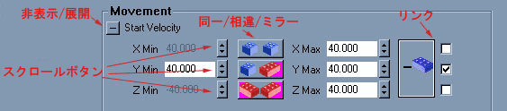
一部のコントロールには、Min (最小) とMax (最大) 値があります。スクロールボタンを使用するとベクタの個別コンポーネントを設定できることに加え、[Different/Same/Mirror] (相違/同じ/ミラー) ボタンをクリックして、変数の最小および最大を同時に変更できます。 * 青と赤のレゴブロックは、お互いに独立して最小値と最大値を編集することができることを示します。 * 青いレゴ2個は、最小と最大の値が同じに保たれることを示します。 * 赤いレゴ2個は、最小と最大の値がミラーされることを示します。たとえば、最大値を40.0に設定すると、最小値が-40.0に自動的に設定されます。 Start Velocity (開始速度) のような一部のコントロールには、複数のフィールドに最小値と最大値があります。この例の場合、X、Y、Zです。ツールの右側にあるチェックボックスにチェックマークを入れている場合、そのX、Y、またはZ値が維持されます。エミッタを削除する
[Delete Emitter] (エミッタを削除) ボタン表示を更新する
多くのパーティクルシステムは、絶えず動くように設計されているわけではありません。たとえば、火光や割れるガラスなどを正しくプレビューするためには、リスタートを行う必要があります。 [Refresh Button] (更新ボタン) をクリックすると、システムがリスタートされます。エクスポート
ゲーム内で動的にパーティクルシステムをスポーンする必要がある場合、そのためのスクリプトを作る必要があります。また、アクタブラウザでパーティクルシステムを使用できるように、スクリプトを書く必要もあるかもしれません。スクリプトを作成するには、 [Export to Script] (スクリプトにエクスポート) ボタンをクリックします。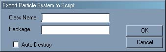
作成したいパッケージとアクタの名前を入力して [Ok] をクリックして、スクリプトをエクスポートします。[Auto Destroy] (自動破壊) にチェックマークを入れると、パーティクルがなくなったときに自動的に自己削除を行うアクタが作成されます。スクリプトのエクスポート先パッケージが機能し、エディタ内で表示されるためには、再コンパイルする必要があります。エミッタを複製する
[Duplicate Emitter] (エミッタを複製) ボタン をクリックすると、現在編集中のエミッタが複製され、最後のタブとして追加されます。エミッタを保存/読み込む
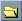
[Open Emitter] (エミッタを開く) ボタンをクリックすると、これらのファイルをパーティクルシステムに読み込むことができます。ヘルプを表示する
UnrealEdツールバー上にある文脈ヘルプツールパラメータリファレンス
本書のリファレンス セクションは、Lode Vandevenneの傑作である、オリジナルのエミッタ チュートリアルから多くを借用しています。General (一般)

Disable (無効にする)
[Disable] (無効にする) がオンになっているとき、パーティクルエミッタは機能しません。たとえば、パーティクルエミッタの設定を記憶させておきたいが、マップ上ではまだ動かしたくないときなどにこの機能を使用することができます。Max Number of Particles (最大パーティクル数)
[Max Number of Particles] (最大パーティクル数) 設定は、このパーティクルエミッタについて画面上に表示できる最大パーティクル数を指定します。最大数に達すると、新しいものをスポーンするために最も古いパーティクルが削除されます。これを0に設定すると、エディタはクラッシュします。この値をたとえば4に設定すると、ウォーミングアップ時間が終わると4つのパーティクルが画面に存在することになります。次のスクリーンショット上では、パーティクルは左へ移動しており、新しいパーティクルが右に表れると、最も左のパーティクルが破棄されます。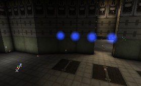
特に、パフォーマンスを向上するために画面上にあるパーティクル量を減らしたい場合に、この設定は非常に有効です。
Name (名前)
このパラメータは、パーティクルシステムに名前をつけます。エディタを次回ロードする時に、新しい [Name] (名前) がタブに表示されます。Respawn Dead Particles (死んだパーティクルを再スポーン)
このボックスのチェックマークを外すと、死んだパーティクルは再スポーンしません。爆破やその他の短期的効果を作成している場合、このボックスのチェックマークを外してください。Automatic Spawning (自動スポーン)
[Automatic Spawning] (自動スポーン) を使用すると、その他のパーティクルシステム プロパティに関わらず、パーティクルの数は [Max Number of Particles] (最大パーティクル数) に保たれます。たとえば、このボックスにチェックマークを入れた状態で、最大パーティクル数を10に設定した場合、システムの [[#Lifetime] [Lifetime]] に関わらず、システムがウォームアップの終了後10個のパーティクルが表示されます。[Automatic Spawning] (自動スポーン) にチェックマークを入れた状態では、スポーンされる Particles Per Second (1秒あたりパーティクル数) を直接制御できません。Particles Per Second (1秒あたりパーティクル数)
[Automatic Spawning] (自動スポーン) のチェックマークを外しておくと、パーティクルが放出される速度を制御できます。この場合、 最大パーティクル数 に設定された数を超えたパーティクルは、絶対に存在できないことにご注意ください。Scale Emitter (スケールエミッタ)
このツールは、エディタ全体でいくつかのプロパティを調整し、エミッタを拡大または縮小します。値を選んで、[Apply] (適用) ボタンをクリックし、エミッタをスケールしてください。Texture (テクスチャ)
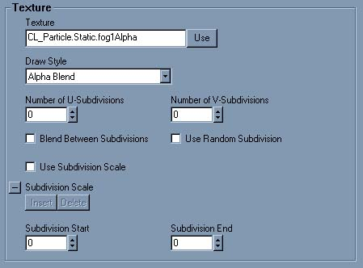
Texture Picker (テクスチャ ピッカー)
テクスチャブラウズからテクスチャを選択し、次に Use (使用) ボタンをクリックして、そのテクスチャをエミッタに適用します。Draw Style (ドロースタイル)
[Draw Style] (ドロースタイル) プロパティを使用すると、マップ上でテクスチャが描かれる方法を変更できます。[Draw Style for Particles] (プロパティ用ドロースタイル) はドロースタイルとほとんど同じで、通常のアクタの [Display] の下に表示されます。ただし、ドロースタイルにあるオプションに追加されたオプションも削除されたオプションもあります。 スクリーンショット例では青いテクスチャはアルファチャンネルのないもので、2つめは様々な色と16個の黒い色の点を持つアルファチャンネルを持つテクスチャです。以下を参照してください。 [Regular] はテクスチャを不透明にするため、非透過の正方形となります。
[Regular] はテクスチャを不透明にするため、非透過の正方形となります。


 [Alpha Blend] はRGBAテクスチャのうちAチャンネルの暗い部分を、明るい部分と比べて透明にします。黒は100%透明 (非表示)になり、白は100%不透明になります。灰色は半透明になります。この効果は、明るいテクスチャでは良く見えません。
[Alpha Blend] はRGBAテクスチャのうちAチャンネルの暗い部分を、明るい部分と比べて透明にします。黒は100%透明 (非表示)になり、白は100%不透明になります。灰色は半透明になります。この効果は、明るいテクスチャでは良く見えません。

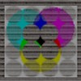
[Modulated] は、テクスチャを一種の反転された半透明色にします。テクスチャの最も明るい色を最も暗い色よりも透明にするため、黒が不透明になり、白が100%透明 (非表示) になります。灰色、赤、青、その他...は半透明になります。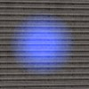
 [AlphaModulate] は、アルファチャンネルがより暗い場所で、実際のRGBテクスチャを明るくします。ある程度、[Alpha Blend] (アルファブレンド) の正反対のように見えます。非常に明るいテクスチャの場合、この効果ははっきりと表れません。
[AlphaModulate] は、アルファチャンネルがより暗い場所で、実際のRGBテクスチャを明るくします。ある程度、[Alpha Blend] (アルファブレンド) の正反対のように見えます。非常に明るいテクスチャの場合、この効果ははっきりと表れません。

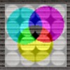
[Darken] は、テクスチャの色をマイナスにし、半透明にします。
 [Brighten] はテクスチャの背景を明るくするため、テクスチャは半透明となり、元のバージョンよりも明るくなります。
[Brighten] はテクスチャの背景を明るくするため、テクスチャは半透明となり、元のバージョンよりも明るくなります。

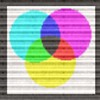
ご覧のように、RGBA8テクスチャのアルファチャンネルは、[Alpha Blend] (アルファブレンド) と [Alpha Modulate] ドロースタイルだけに使用されています。Subdivisions (細区分)
1つのテクスチャを別々の細区分に分割することができます。パーティクルがテクスチャの1つをランダムに選択するように設定するか、またはパーティクルの[[#Lifetime] [Lifetime]] の間に1つの細区分から別の細区分に変化するように設定できます。このために、使用するテクスチャを自分で作成する必要があります。a * b の結果に等しい数の四角形に分割して、それぞれの四角形に独自の絵を与えます。たとえば、これは3 * 3 = 9 細区分に分割されることができるテクスチャです。 細区分を設定するには、水平および垂直の細区分にU-SubdivisionsとV-Subdivisionsを設定します。
これらの設定を0または1に設定すると、まったく同じ結果となり、テクスチャが1つの細区分に分割されます。つまり、細区分がなしになります (細区分はテクスチャ自体)。このため、パーティクルは次のように表示されます。
細区分を設定するには、水平および垂直の細区分にU-SubdivisionsとV-Subdivisionsを設定します。
これらの設定を0または1に設定すると、まったく同じ結果となり、テクスチャが1つの細区分に分割されます。つまり、細区分がなしになります (細区分はテクスチャ自体)。このため、パーティクルは次のように表示されます。
 U-Subdivisions とV-Subdivisions の両方を3に設定すると、次のようになります。
U-Subdivisions とV-Subdivisions の両方を3に設定すると、次のようになります。
 これらを2または4に設定すると、このテクスチャの一部の絵は半分にカットされます。これは、3* 3の細区分であり、他の値には合わないためです。
これらを2または4に設定すると、このテクスチャの一部の絵は半分にカットされます。これは、3* 3の細区分であり、他の値には合わないためです。

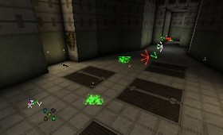
U-Subdivisions=1およびV-Subdivisions=3 あるいは、U-Subdivisions=3およびV-Subdivisions=1に設定すると、次のように表示されます。ｚ
 [Use Random Subdivision] (ランダム細区分を使用) ボックスにチェックマークが入っていれば、エミッタは始めに各パーティクルにランダムな細区分を与え、パーティクルが生きている間はこの細区分が保たれます。
[Use Random Subdivision] (ランダム細区分を使用) ボックスにチェックマークが入っていれば、エミッタは始めに各パーティクルにランダムな細区分を与え、パーティクルが生きている間はこの細区分が保たれます。
 [Blend Between Subdivisions] (細区分間でブレンド) にチェックマークを入れると (そして、[Use Random Subdivision] にはチェックを入れない)、パーティクルは1つの細区分から別の細区分へとフェードします。
[Blend Between Subdivisions] (細区分間でブレンド) にチェックマークを入れると (そして、[Use Random Subdivision] にはチェックを入れない)、パーティクルは1つの細区分から別の細区分へとフェードします。
 通常、パーティクルはこの方法を用いていろいろな細区分に変わっていきますが、すべての細区分を同じ時間だけ保つことになります。時間は、各細区分について等しく分割されます。これを変えたい場合、[Subdivision Scale] (細区分スケール) 機能を使用することができます。これを行うには、まず [Subdivision Scale] (細区分スケール) ボックスにチェックマークを入れます。次に、[Subdivision Scale] の下の [Insert] (挿入) ボタンをクリックして、3つの細区分スケールを作ります (すると、9つの細区分のうち4つが使用されます)。9つの細区分を使用したい場合、8つの細区分スケールを作らなければなりません。8 未満の細区分スケールを作っても、最後の細区分は表示されません。一方、細区分スケールを多めに作っても問題はありません。最後の細区分が無視されるだけです。
細区分スケールはパーティクルの[[#Lifetime] [Lifetime]] に対応しているため (これについては 時間セクションを参照)、1.000000の細区分スケールは、パーティクルの[[#Lifetime] [Lifetime]] と同じ時間がかかります。各細区分スケールは、パーティクルのライフタイムの特定のポイントを表します。たとえば、 Lifetime が4秒なら、0.25の細区分スケールは、ライフタイムの1秒目の終わりになります。連続している細区分スケールは常に1つ前のスケールよりも大きくなくてはなりません。そうでなければ、時間が戻り、その細区分は無視されてしまいます。たとえば、細区分 [0] = 0.1、[1] = 0.3、そして [2] = 0.6の場合、LifeTimeRange (ライフタイム範囲) を4秒に設定すると、パーティクルは細区分1を0.4秒、次に細区分2を0.8秒、細区分3を1.2秒、細区分4を残りの1.6秒間表示します。スクリーンショットでは、パーティクルは左から右に動いています。
通常、パーティクルはこの方法を用いていろいろな細区分に変わっていきますが、すべての細区分を同じ時間だけ保つことになります。時間は、各細区分について等しく分割されます。これを変えたい場合、[Subdivision Scale] (細区分スケール) 機能を使用することができます。これを行うには、まず [Subdivision Scale] (細区分スケール) ボックスにチェックマークを入れます。次に、[Subdivision Scale] の下の [Insert] (挿入) ボタンをクリックして、3つの細区分スケールを作ります (すると、9つの細区分のうち4つが使用されます)。9つの細区分を使用したい場合、8つの細区分スケールを作らなければなりません。8 未満の細区分スケールを作っても、最後の細区分は表示されません。一方、細区分スケールを多めに作っても問題はありません。最後の細区分が無視されるだけです。
細区分スケールはパーティクルの[[#Lifetime] [Lifetime]] に対応しているため (これについては 時間セクションを参照)、1.000000の細区分スケールは、パーティクルの[[#Lifetime] [Lifetime]] と同じ時間がかかります。各細区分スケールは、パーティクルのライフタイムの特定のポイントを表します。たとえば、 Lifetime が4秒なら、0.25の細区分スケールは、ライフタイムの1秒目の終わりになります。連続している細区分スケールは常に1つ前のスケールよりも大きくなくてはなりません。そうでなければ、時間が戻り、その細区分は無視されてしまいます。たとえば、細区分 [0] = 0.1、[1] = 0.3、そして [2] = 0.6の場合、LifeTimeRange (ライフタイム範囲) を4秒に設定すると、パーティクルは細区分1を0.4秒、次に細区分2を0.8秒、細区分3を1.2秒、細区分4を残りの1.6秒間表示します。スクリーンショットでは、パーティクルは左から右に動いています。
 細区分スケール [0] = 0.4 および [1] = 1にすると、細区分のうちの2つだけが使用されます。このとき、[2] にどの値を入れても関係ありません。
細区分スケール [0] = 0.4 および [1] = 1にすると、細区分のうちの2つだけが使用されます。このとき、[2] にどの値を入れても関係ありません。
 この効果を最大限に利用するには、正しいLifeTimeRangeを使用した上、 Number of Particles (パーティクル数) が十分高い値に設定されていることを確実にする必要があります。これに関しては、 一般 および Time セクションを参照してください。
テクスチャの細区分のうち一部だけを使いたい場合、[Subdivision End] (細区分終了)と[Subdivision Start] (細区分開始) 値を使用してください。Subdivision 0はテクスチャの左上隅の細区分で、Subdivision 1はその下、そして、最後の細区分はテクスチャの右下隅です。以下の図は細区分の番号を示しています。
この効果を最大限に利用するには、正しいLifeTimeRangeを使用した上、 Number of Particles (パーティクル数) が十分高い値に設定されていることを確実にする必要があります。これに関しては、 一般 および Time セクションを参照してください。
テクスチャの細区分のうち一部だけを使いたい場合、[Subdivision End] (細区分終了)と[Subdivision Start] (細区分開始) 値を使用してください。Subdivision 0はテクスチャの左上隅の細区分で、Subdivision 1はその下、そして、最後の細区分はテクスチャの右下隅です。以下の図は細区分の番号を示しています。

Custom Texture Set (カスタム テクスチャ セット)
このオプションは、エミッタのタイプがメッシュエミッタの場合にのみ表示されます。カスタム テクスチャ セットとは、選択されたメッシュの標準テクスチャの代わりに使用される、様々なテクスチャの組み合わせです。メッシュエミッタに関する詳細は、 メッシュ を参照してください。レンダリング

Disable Fogging (フォグを無効にする)
チェックマークを入れた場合、パーティクルに対するフォグは無効にされますので、フォグを通して遠くからそのパーティクルを見ることができます。Alpha Test/Alpha Ref
これにチェックマークを入れると、ビデオハードウェアは、Alpha Ref欄に入力されたアルファ値がすでに蓄積されたピクセルは書き込みません。Z-Test
このボックスにチェックマークを入れるとエミッタのためにデフォルトおよび正常なビヘイビアがテストされます。このボックスのチェックマークを外すと、エミッタはほとんど何の上にでも描画します。z-testのチェックマークを外したその他のエミッタやアルファチャンネルのオブジェクト上には描画しない場合があります。Z-Write
Zバッファにパーティクルを書き込みます。(「グラフィックカードでは、グラフィックカード内のこのビデオメモリ領域は、どのオンスクリーン要素が表示されているか、どれが別のオブジェクトの影に隠れているかを記憶します。」- CNET 用語集)Color/Fading (カラー/フェード)

Opacity (不透明度)
このユーティリティツールは、エミッタ全体の半透明度を調整します。また、カラー/フェードカテゴリのいくつかのプロパティを変更します。Fading (フェード)
パーティクルをフェードインまたはフェードアウトさせることができます。たとえば、開始時点で目に見えない状態でフェードインし、だんだん目に見えるようにする場合などです。また、カラーチャンネルの一部だけをフェードさせることができます。そのため、たとえば、テクスチャの赤と緑の部分だけを非表示にしながら、青色の部分は常に表示させることができます。 パーティクルエミッタをフェードインさせるには、[Fade-In End Time] (フェードイン終了時間) スライダを右へドラッグしてください。スクリーンショット上では、パーティクルの Lifetime (ライフタイム) が5.0、[Fade In End Time] (フェードイン終了時間) が5.0に設定されています。これにより、パーティクルの消滅時には100%表示されていることになります。 [Fade-Out Start Time] (フェードアウト開始時間) は [Fade-In End Time] と同じように機能します。設定が0 (スライダがずっと左) の場合、パーティクルが生まれたときには既にフェードを開始していますが、消滅する瞬間には完全にフェードアウトしています。スクリーンショットの [Fade-Out Start Time] は1です。
[Fade-Out Start Time] (フェードアウト開始時間) は [Fade-In End Time] と同じように機能します。設定が0 (スライダがずっと左) の場合、パーティクルが生まれたときには既にフェードを開始していますが、消滅する瞬間には完全にフェードアウトしています。スクリーンショットの [Fade-Out Start Time] は1です。
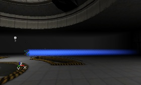
Fade Out/In Factor (フェードイン/アウト係数)
[Fade In Factor] (フェードイン係数) と [Fade Out Factor] (フェードアウト係数) を使用して、個別のカラーチャンネルのフェードを設定できます。この値が1なら、パーティクルは通常通りフェードします。たとえば、R = 0に設定すると、赤チャンネルが0％変更されます。そのため、他の色は非表示になっても (フェードインの開始時、またはフェードアウトの終了時)、赤は表示されたままです (最初の画面左の部分)。または、G = 0の場合、緑色が表示されたままとなります (最初の画面の右側)。RとGが0のとき、赤と緑の両方が表示されますが、ここでは黄色っぽくみえます (2つめの画面の左側)。R、G、およびBが5のとき、テクスチャ全体がまったく非表示になるため、フェードアウトがもっと速くなります (2つめの画面の右側)。R、G、およびBがすべて0なら、テクスチャは非表示にはなりません。

Color Multiplier Range (カラー乗数範囲)
[Color Multiplier Range] (カラー乗数範囲) は、各パーティクルのライフタイムの開始時に適用される乗数です。これは主に2つの用途に使用できます。1つめは、パーティクルにランダムな色の変化を与えるためで、2つめは、テクスチャやカラースケールを変更しなくてもエミッタの色を調整するためです。パーティクルにわずかにランダムな色の組み合わせを与えるには、フィールドの最小値と最大値を違う値に設定します。この幅が大きいほど、色の変化が大きくなります。エミッタの色を調整するには、R、G、またはBの値を変更して、エミッタの赤、緑、青をそれぞれ小さくしてください。Use Color Scale (カラースケールを使用)
カラースケールの使用とカラースケールの繰り返しをオンにします (下記を参照)。Color Scale (カラースケール)
パーティクルに適用できるもう1つのスケールです。スケールはパーティクルのライフタイム間に何かを変更しますが、この場合は色を変更します。カラースケールを使用するには、まず [Use Color Scale] (カラースケールを使用) をオンにし、次に新しいカラーバーを追加します。新しいカラーバーを追加するには、カラースケールボックスのどこかをダブルクリックします。カラーピッカーウィンドウが表示されますので、色を選択し、[OK]をクリックします。すると、縦の棒にダブルクリックされた色が表示されます。 色をダブルクリックして、カラーピッカーを表示させるか、または色をシングルクリックしてRGBおよびA値を手動で調整する方法によって、この色をいつでも変更できます。カラーピッカーはアルファ値をサポートしないため、アルファ値 (アルファブレンドモードにのみ適用される) は、手動で変更される必要があります。カラーバー内の色は、テクスチャの色と組み合わされるため、テクスチャが青っぽい色でカラーバーが白なら、パーティクルはやはり青っぽく見えます。一方、カラーバーがシアンの場合パーティクルはシアンにより近く見えますが、カラーバーの色ほど濃いシアンにはなりません。白いテクスチャは、カラーバーの色をよく出すため、カラースケールに最も適しています。
カラーバーの位置は、この色の相対時間、つまり、パーティクルのライフタイムから見て、パーティクルが選択された色になるまでの時間を表します。カラーバーが [Color Scale] (カラースケール) の真ん中にある場合、値は0.5前後です。パーティクルのライフタイムが4.0秒なら、パーティクルが生まれてから選択された色になるまで2.0秒かかりることになります。相対時間を変更するには、カラーバーをドラッグするか、または [Color Scale] (カラースケール) ボックス内の [Relative Time] (相対時間) フィールドを調整します。
カラースケールは2つ以上のカラーバーがある場合に最も便利です。[Color Scale] ボックスの右端にカラーバーがない場合、パーティクルの色は一番右にあるカラーバーの色の後で通常の色に戻ります。これは、通常好ましくありません。[Color Scale] ボックス内の左端にカラーバーが存在しない場合、システムはそこに白いカラーバーがあるかのように動作します。以下は、3本のカラーバーが白いテクスチャと一緒に使用されている例です。中央のカラーバーが選択されているため、フィールド値はそのカラーバーに対応した値を表示しています。
色をダブルクリックして、カラーピッカーを表示させるか、または色をシングルクリックしてRGBおよびA値を手動で調整する方法によって、この色をいつでも変更できます。カラーピッカーはアルファ値をサポートしないため、アルファ値 (アルファブレンドモードにのみ適用される) は、手動で変更される必要があります。カラーバー内の色は、テクスチャの色と組み合わされるため、テクスチャが青っぽい色でカラーバーが白なら、パーティクルはやはり青っぽく見えます。一方、カラーバーがシアンの場合パーティクルはシアンにより近く見えますが、カラーバーの色ほど濃いシアンにはなりません。白いテクスチャは、カラーバーの色をよく出すため、カラースケールに最も適しています。
カラーバーの位置は、この色の相対時間、つまり、パーティクルのライフタイムから見て、パーティクルが選択された色になるまでの時間を表します。カラーバーが [Color Scale] (カラースケール) の真ん中にある場合、値は0.5前後です。パーティクルのライフタイムが4.0秒なら、パーティクルが生まれてから選択された色になるまで2.0秒かかりることになります。相対時間を変更するには、カラーバーをドラッグするか、または [Color Scale] (カラースケール) ボックス内の [Relative Time] (相対時間) フィールドを調整します。
カラースケールは2つ以上のカラーバーがある場合に最も便利です。[Color Scale] ボックスの右端にカラーバーがない場合、パーティクルの色は一番右にあるカラーバーの色の後で通常の色に戻ります。これは、通常好ましくありません。[Color Scale] ボックス内の左端にカラーバーが存在しない場合、システムはそこに白いカラーバーがあるかのように動作します。以下は、3本のカラーバーが白いテクスチャと一緒に使用されている例です。中央のカラーバーが選択されているため、フィールド値はそのカラーバーに対応した値を表示しています。

Color Scale Repeats (カラースケール反復回数)
[Color Scale Repeats] (カラースケール反復回数) を使用すると、カラースケールプロセスを任意の回数だけ繰り返すことができます。デフォルトは0です。0の場合、カラースケールは1度だけ機能し、繰り返しは行われません。値が1.0に設定されると、2つのスケールができます。1つ目は通常のカラースケールで、もう1つは繰り返しのためのスケールです。このスケールは、上記と同じカラースケールですが、[Color Scale Repeats] (カラースケール反復回数) が1.0に設定されています。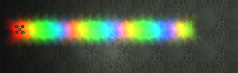
Time (時間)
 #Lifetime
#Lifetime
Lifetime (ライフタイム)
Lifetimeは、パーティクルの寿命を秒数で表します。この時間が経過したら、パーティクルは破棄され再スポーンできます。Initial Time (初期時間)
[Initial Time] (初期時間) を使用すると、既に何秒か経過したパーティクルがスポーンされます。 ライフタイム が4で[Initial Time] が3の場合、パーティクルはスポーンされたときには既に3秒経過しており、あと1秒しか生きられません。この設定を使用することで、スケールを使用するときに興味深い効果を得られます。 細区分スケール、 カラースケール と サイズスケール も、すでに3秒経過しているものとして計算されます。Initial Delay (初期遅延)
[Initial Delay] (初期遅延) はエミッタがジョブを開始するまでにかかる時間です。たとえば、[Initial Delay] に５を入力すると、マップを開始したとき、または[[#Refreshing][refresh] (更新) をクリックしたときに、放出開始まで5秒間何も行いません。 すべての設定について、最小値と最大値を使用することができます。この2つを同じ値にするとそのままの値が使用されます。最小値を最大値よりも小さくすると、それぞれのパーティクルはスポーン時に任意のライフタイム範囲または初期時間範囲を取得します。ランダムな値は最小値と最大値の間の値となります。ランダムなライフタイムを使用する場合、パーティクルは一定の速度でもスクリーンショットのように見えます。別のパーティクルが継続している間に、パーティクルの一部が消滅するため穴が開いているように見えます。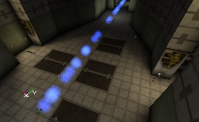
Seconds Before Inactive (非アクティブになるまでの秒数)
この値を0.000000に設定すると、パーティクルがビューの外にあるときも、コンピュータによってパーティクルの動作が常に計算されます。ここに値を入力し、エミッタアクタがその秒数だけビューから外れると、コンピュータはそのパーティクルの動きを計算するのをやめます。これは、パフォーマンスを向上させるための手段です。つまりエミッタから顔を背けるとパーティクルは停止し、もう一度見たときに再び動き出します。[Seconds Before Inactive] = 0.010000 とすると、次の図のようになります。 その後、カメラを180度回転させ、1時間待ってからもう一度エミッタの方を向くと、まったく同じ画像が見られることになります (ウォームアップがまだ終了していない場合)。エミッタアクタが見えていない場合、そのパーティクルをいくつか見ることができるはずでも、そのエミッタのパーティクルを見ることはできません。エミッタ自体が見えている時にだけ、そのパーティクルを見ることができます。これの状態を避けたい場合、[Seconds Before Inactive] (非アクティブになるまでの秒数) を0.000000に設定してください。
その後、カメラを180度回転させ、1時間待ってからもう一度エミッタの方を向くと、まったく同じ画像が見られることになります (ウォームアップがまだ終了していない場合)。エミッタアクタが見えていない場合、そのパーティクルをいくつか見ることができるはずでも、そのエミッタのパーティクルを見ることはできません。エミッタ自体が見えている時にだけ、そのパーティクルを見ることができます。これの状態を避けたい場合、[Seconds Before Inactive] (非アクティブになるまでの秒数) を0.000000に設定してください。
Relative Warmup Time (相対ウォームアップ時間) /Warmup Ticks Per Second (1秒あたりのウォームアップティック)
エンジンにエミッタを事前算定させることができます。マップを開始したときには、パーティクルエミッタが既に何秒間かそこに存在したような状態となり、ウォームアップ効果を見ることはありません。ウォームアップとは、まだすべてのパーティクルがスポーンされていない時間です。[Relative Warmup Time] (相対ウォームアップ時間) を選択することで、パーティクルの[[#Lifetime] [Lifetime]] に応じて、事前算定する必要がある秒数を設定できます。つまり、1に設定すると、最初のパーティクルが生きる秒数だけ事前算定されます。しかし、これが機能するには、[WarmupTicksPerSecond] (1秒あたりのウォームアップティック) も設定しておく必要があります。[WarmupTicksPerSecond] は、相対ウォームアップ時間の秒あたりのティック数を示します。[Warmup Ticks Per Second] の値が大きければ大きいほど、事前算定が大きくなります。 要するに、表示されるウォームアップをなくしたい場合は、特定のパーティクルエミッタにかかる「相対的ウォームアップ時間」が長いほど、[Warmup Ticks Per Second] 設定の値を高く設定する必要があります (そして [Relative Warmup Time] を1に設定) 。Movement (動作)

Start Velocity (開始速度)
パーティクルに一定の速度を与えるには、[Start Velocity] (開始速度) を使用します。X、YとZ値は、それぞれの方向にパーティクルが移動する速度を調整します。[Min] と [Max] が同じなら、パーティクルは、入力された速度で設定した方向へ動きます。Min < Maxなら、パーティクルは最小値と最大値間のいずれかの速度を使用して一定速度で移動します。たとえば、X-Min と Y-Min を等しく、Y-Min と Y-Maxを等しく、そしてZ-Min と Z-Maxを等しく設定すると (加速度は必ず0に設定すること)、すべてのパーティクルは同じ向きへ移動します。 しかし、X-Minを-500、X-Maxを+500に設定すると (かつY値はそのまま)、パーティクルはランダムな方向に移動します。
しかし、X-Minを-500、X-Maxを+500に設定すると (かつY値はそのまま)、パーティクルはランダムな方向に移動します。
 もしMin = -150 および X-Max = +150に設定すると、方向の違いは少なくなります。
もしMin = -150 および X-Max = +150に設定すると、方向の違いは少なくなります。

Acceleration (加速度)
パーティクルを動かすために、速度や加速度を与えることができます。[Acceleration] (加速度) はパーティクルの速度をどんどん速くするもので、セットアップは簡単です。エミッタのプロパティを開いて、そこから [Sprite Emitter] (スプライトエミッタ) のプロパティを開きます。その中で、[Acceleration] (加速度) を展開してください。 そこに、X、YおよびZ軸に沿った加速度を入力できます。マイナスの値も入力できます。平面図の上の部分が北であると想定すると、この設定で次の効果が得られます。 X > 0なら、パーティクルは東へ向かいます
X < 0なら、パーティクルは西へ向かいます
Y > 0なら、パーティクルは南へ向かいます
Y < 0なら、パーティクルは北へ向かいます
Z > 0なら、パーティクルは天井または空へ向かいます
Z < 0なら、パーティクルは地面へ向かいます
総加速度は、これら3つのコンポーネントの合計です。つまり、X = 425、Y =-950、およびZ =-950なら、パーティクルは北東の下方へと向かいます。このとき、東よりも北への加速度が大きくなります。しかし、エミッタアクタを回転ツールで回転させた場合、そのときに座標系が回転されているため、これは正しい値ではなくなります。その場合、[Advanced] の[bDirectional] を前もってTrueに設定していれば、X軸は矢印の方向になります。加速を与え次第、パーティクルが移動する様子を見ることができます。
[Acceleration] を使用すると、秒ごとにパーティクルが加速されますが、 StartVelocityは一定のスピードです。[Acceleration] (加速度) は使用されていないが、[Velocity] (速度) が設定されている場合、パーティクルは生きている間は同じ速度で移動します。速度と加速度の両方を使用する場合、パーティクルの総スピードは、等速度と、加速によって生じる可変速度の和となります。同じ軸にVelocity (速度) とAcceleration (加速度) の両方が適用され、かつ、それらに反対の符号がある場合、パーティクルは最初1つの方向に進みますが、加速度によって生じたスピードの絶対値が速度の絶対値よりも大きくなる地点で、パーティクルは元来た方向へ戻ります。速さと加速を、両方とも違う軸に沿って使用すれば、パーティクルは放物線を描きます。放物線は、弾丸や物を投じた場合などに描かれる、現実的な軌跡です。たとえば、[Acceleration] がZ =-950で、[Start Velocity] (開始速度) がX-Min = 500 X-Max = 500なら、次のようになります。
X > 0なら、パーティクルは東へ向かいます
X < 0なら、パーティクルは西へ向かいます
Y > 0なら、パーティクルは南へ向かいます
Y < 0なら、パーティクルは北へ向かいます
Z > 0なら、パーティクルは天井または空へ向かいます
Z < 0なら、パーティクルは地面へ向かいます
総加速度は、これら3つのコンポーネントの合計です。つまり、X = 425、Y =-950、およびZ =-950なら、パーティクルは北東の下方へと向かいます。このとき、東よりも北への加速度が大きくなります。しかし、エミッタアクタを回転ツールで回転させた場合、そのときに座標系が回転されているため、これは正しい値ではなくなります。その場合、[Advanced] の[bDirectional] を前もってTrueに設定していれば、X軸は矢印の方向になります。加速を与え次第、パーティクルが移動する様子を見ることができます。
[Acceleration] を使用すると、秒ごとにパーティクルが加速されますが、 StartVelocityは一定のスピードです。[Acceleration] (加速度) は使用されていないが、[Velocity] (速度) が設定されている場合、パーティクルは生きている間は同じ速度で移動します。速度と加速度の両方を使用する場合、パーティクルの総スピードは、等速度と、加速によって生じる可変速度の和となります。同じ軸にVelocity (速度) とAcceleration (加速度) の両方が適用され、かつ、それらに反対の符号がある場合、パーティクルは最初1つの方向に進みますが、加速度によって生じたスピードの絶対値が速度の絶対値よりも大きくなる地点で、パーティクルは元来た方向へ戻ります。速さと加速を、両方とも違う軸に沿って使用すれば、パーティクルは放物線を描きます。放物線は、弾丸や物を投じた場合などに描かれる、現実的な軌跡です。たとえば、[Acceleration] がZ =-950で、[Start Velocity] (開始速度) がX-Min = 500 X-Max = 500なら、次のようになります。
 ここで、加速度のXも-1000に設定すると、次のようになります。
ここで、加速度のXも-1000に設定すると、次のようになります。

Max Velocity (最大速度)
Accelerationによって生じる速度と [Velocity] (速度) の和が、Absolute Velocity (絶対速度) です。すべての軸について [Max Velocity] (最大速度) 値を設定できます。最大速度を指定すると、[Max Velocity] (最大速度) に到達するまで、パーティクルの速度が上昇し続けます。最大化速度に到達すると、パーティクルは一定の速度を保ちます。最初の放物線例の [Max Velocity] のZ値を600に変更すると、パーティクルは最初放物線のように見えますが、Z軸に沿ったスピードが600に達すると、一定 (線) になります。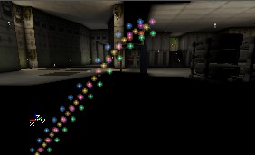
Velocity Loss (速度喪失)
[Velocity Loss] (速度喪失) 設定は、選択した軸に沿ったパーティクルの移動を遅らせます (X = Y = Zに設定した場合、パーティクルがどこに向かっているかにかかわらず、等しく減速します)。これは、摩擦または空気抵抗のように機能します。100より大きければ、パーティクルは突然高速で跳ね返ります。また、[Velocity Loss] (速度喪失) を最小値と最大値の間のランダムな値にしたい場合、MinとMax値を使用できます。Add Velocity From Other Emitter (速度を別のエミッタから適用)
[Add Velocity From Other Emitter] (速度を別のエミッタから適用)は、同じ [Emitter] アクタの、別のパーティクルエミッタから出るランダムパーティクルと同じ速度を、パーティクルに与えます。この設定は Location (ロケーション) 内の [[#AddLocationFromOtherEmitter][Add Location From Other Emitter] (ロケーションを別のエミッタから適用) に非常に類似した機能を提供します。Add Velocity Multiplier (速度乗数を追加)
Add Velocity From Other Emitter (速度を別のエミッタから適用) が [None] に設定されていない場合、パーティクルの速度に、この値が乗じられます。たとえば、このエミッタからのパーティクルを別のエミッタからのパーティクルの2倍の速度にしたい場合、このツール内のすべての値を2.0に設定するとよいでしょう。Get Velocity Direction From (速度方向の取得元)
[Get Velocity Direction From] (速度方向の取得元) を選択すると、速度をどの方向に適用するかを選択できます。[None] がデフォルトで、上記で説明した通りに動作します。[Start Position And Owner] (開始位置とオーナー) を使用すると、パーティクルは、その開始ポジションつまりエミッタアクタによって決定された方向に向かい、エミッタから離れていきます。.[Owner and Start Position] (オーナーと開始位置) も同じことを行いますが、パーティクルは開始位置からエミッタアクタへ向かって動き、そこに到達してもさらに進み続けます。この設定は、開始ポジションがエミッタ自体でない場合にのみ機能します。詳しくは、 Location (ロケーション) を参照してください。 (掲載予定)Coordinate System (座標系)
CoordinateSystem (座標系) は、パーティクルのLocation (ロケーション) のX、Y、およびZ値の意味を定義します。[CoordinateSystem]をPTCS_Relativeに設定すると、パーティクルの(X,Y,Z) = (0,0,0) ポジションが、エディタ内のエミッタアクタのポジションになるため、パーティクルがそこからスポーンされます。 座標系のデフォルトであるPTCS_Independentは、[PTCS_Relative] と同じことを行いますが、スポーンされた後パーティクルは独立し、絶対座標系を使用します。 動くエミッタ を使用する場合に、PTCS_RelativeとPTCS_Independent間の違いは重要になります。
この3つの座標系はすべて、回転ツールを使用してエミッタアクタを回転すると、回転します。エミッタアクタのプロパティで[Advanced]-[bDirectional] をTrueに設定すると、回転をうまく行えるよう、エディタ内に矢印が表示されます。
ロケーション セクションでは、パーティクルを別の ロケーション でスポーンさせる方法を説明しています。ここでも、使用する座標系によって、エミッタアクタに対して相対的または絶対的なロケーションのいずれかを使用します。
座標系のデフォルトであるPTCS_Independentは、[PTCS_Relative] と同じことを行いますが、スポーンされた後パーティクルは独立し、絶対座標系を使用します。 動くエミッタ を使用する場合に、PTCS_RelativeとPTCS_Independent間の違いは重要になります。
この3つの座標系はすべて、回転ツールを使用してエミッタアクタを回転すると、回転します。エミッタアクタのプロパティで[Advanced]-[bDirectional] をTrueに設定すると、回転をうまく行えるよう、エディタ内に矢印が表示されます。
ロケーション セクションでは、パーティクルを別の ロケーション でスポーンさせる方法を説明しています。ここでも、使用する座標系によって、エミッタアクタに対して相対的または絶対的なロケーションのいずれかを使用します。
Min Squared Velocity (最小二乗速度)
これは、パーティクルが非アクティブになる前の最小速度を制御します。パーティクルは壁にぶつかる度に速度を落とすため、 [[#CollisioN][衝突]を使用する場合に重要です。Use Velocity Scale (速度スケールを使用)
 [UseVelocityScale] (速度スケールを使用) は、速度スケールのオンとオフを切り替えます。この速度スケールは時間の経過に従ってパーティクルの速度を拡大・縮小します。速度スケールはコンポーネントスケールであるため、時間の経過と共にパーティクルの方向を変化させるために使用できます。これは、逆方向でも使用できます。
[UseVelocityScale] (速度スケールを使用) は、速度スケールのオンとオフを切り替えます。この速度スケールは時間の経過に従ってパーティクルの速度を拡大・縮小します。速度スケールはコンポーネントスケールであるため、時間の経過と共にパーティクルの方向を変化させるために使用できます。これは、逆方向でも使用できます。
Velocity Scale (速度スケール)
[Velocity Scale] (速度スケール) を使用すると、ライフタイムの間にパーティクルの速度をスケールさせることができます。これを使用することで、パーティクルの動きを止め、そして再び動かすなどの操作を行うことができます。また、1つの入力項目にXスケールを0.0、Yスケールを1.0に設定して、別の入力項目にXスケールを1.0、Yスケールに0.0に設定することで、パーティクルの方向を変更することができます。[Relative Velocity] (相対速度) は、パーティクルの現在速度の乗数です、そして、[Relative Time] (相対時間) はその乗数がかけられる時間です。すべてのスケールと同様、[Velocity Scale] の複数の入力項目は補間されます。Velocity Scale Repeats (速度スケール反復回数)
[Velocity Scale Repeats] (速度スケール反復回数) は、[Velocity Scale] (速度スケール) が繰り返される回数です。これを0に設定すると、速度スケールは1度だけ発生します。これを1に設定すると、速度スケールは2度発生します。Location (ロケーション)

Start Location Shape (開始ロケーション形状)
パーティクルがスポーンされる時の全体的形状を定義します。 [Box] (ボックス) を選択すると、[Start Location] (開始ロケーション) 内で指定された変数を使用して、指定されたボックス内ですべてのパーティクルをスポーンします。たとえば、X、Y、およびZ (Min) を-150、X、Y、およびZ (Max) を +150に設定すると、すべてのパーティクルは300*300*300のボックス内から開始されます。 [Sphere] (球体) を選択すると、[Sphere Radius] (球体半径) 内で指定したものと同じ半径を持つ球体内でパーティクルがスポーンされることが可能になります。
[Sphere] (球体) を選択すると、[Sphere Radius] (球体半径) 内で指定したものと同じ半径を持つ球体内でパーティクルがスポーンされることが可能になります。
 [Polor] (極) は、さらに複雑です。[Start Location Polar Range] (開始ロケーション極範囲) 内のX、Y、およびZ変数を それぞれシータ、ファイ、_r_として標準極方程式で使用します。これは基本的に、半径_r_を持つ、中が空洞になった部分球体を作成します。このとき、経度側で_シータ_角、緯度側で_ファイ_角を使用します。
[Polor] (極) は、さらに複雑です。[Start Location Polar Range] (開始ロケーション極範囲) 内のX、Y、およびZ変数を それぞれシータ、ファイ、_r_として標準極方程式で使用します。これは基本的に、半径_r_を持つ、中が空洞になった部分球体を作成します。このとき、経度側で_シータ_角、緯度側で_ファイ_角を使用します。
Start Location Offset (開始ロケーションオフセット)
Start Location Shape (開始ロケーションオフセット) 内の設定は、[Location Offset] (ロケーションオフセット) と組み合わされるため、最終的な開始ロケーションはこれら2つを合わせた物になります。これによって、パーティクルのスポーンエリアの中心をエミッタ以外にすることができます。Add Location From Other Emitter (ロケーションを別のエミッタから適用)
[Add Location From Other Emitter] (ロケーションを別のエミッタから適用) では、同じエミッタアクタ内にある別のパーティクルエミッタを選択できます。これを [None] 以外に設定すると、パーティクルは通常スポーンされるべき場所からはスポーンされず、選択されたパーティクルエミッタのパーティクルのうち、1つの場所でスポーンされます。 スポーンされたパーティクルはそのパーティクルを追わず、その場所でスポーンされた後は独立して動きます。 たとえば、動いている別のパーティクルの後ろにパーティクルの尾を引かせることができます。これは次のパーティクルマップ例で実施されています。 青いスプライトはまったく動きませんが、消滅すると跳ね返るボールの1つとして再スポーンするため、青いスプライトはすべて一緒になってボールが残すトレースの形状を形成します。
青いスプライトはまったく動きませんが、消滅すると跳ね返るボールの1つとして再スポーンするため、青いスプライトはすべて一緒になってボールが残すトレースの形状を形成します。
Mesh Spawning (メッシュスポーン)
メッシュスポーンは、静的メッシュの頂点を使用して、このエミッタ内のスポーンロケーションを計算します。また、オプションで速度とパーティクルの色を計算します。静的メッシュは、ワールド内に存在する必要もないし、静的メッシュのフェイスは重要ではありません。つまり、モデリングプログラムで、静的メッシュの任意のシェイプを作成できることを意味します。また、ワールドにある既存の静的メッシュを使用して、効果を添付し、茂みに火がついているような効果を得ることができます。
Mesh Spawning Type (メッシュスポーンタイプ)
| Mesh Spawning Type | 説明 |
|---|---|
| Do Not Use Mesh Spawning | オフ。メッシュスポーニングはまったく使用されません。 |
| Linear | パーティクルは、頂点の番号に基づいてそれ以降の各頂点でスポーンされます。. |
| Random | パーティクルはランダムな頂点上でスポーンされます。 |
Static Mesh (静的メッシュ)
これは、メッシュスポーンに使用するための定型です。メッシュブラウザ内のメッシュを選択して、[Use] (使用) をクリックしてください。Mesh Scale (メッシュスケール)
[Mesh Scale] (メッシュスケール) は [Static Mesh] (静的メッシュ) のスケールです。この範囲を指定すると、スポーンされる各パーティクルについて範囲内からランダムな数字が選ばれます。Uniform Mesh Scale (一定のメッシュスケール)
チェックマークを入れると、Xコンポーネントだけを使用してメッシュを一定にスケールします。これを使用すると、静的メッシュの拡大や縮小を防ぎ、サイズだけを変更します。Velocity From Mesh Normal (メッシュ法線からの速度)
各パーティクルの初期速度を定義するために、各頂点の法線を使用します。Velocity Scale (速度スケール)
メッシュ法線からの速度をスケールします。たとえば、外に向いた法線を持つメッシュ球体がある場合、[Velocity Scale] (速度スケール) をマイナスの値に設定できます。すると、パーティクルは球体の中心へ向けて内側へ移動します。Uniform Velocity Scale (一定の速度スケール)
[Uniform Velocity Scale] (一定の速度スケール) をオンにすると、[Velocity Scale] (速度スケール) のXコンポーネントのみを使用して、速度が一定にスケールされます。Spawn Only In Normal Direction (法線方向にのみスポーン)
(注意:[Respawn Dead Particles] がオンの場合は使用しないでください!) [Normal Direction] (法線の方向) の [Normal Direction Threshold] (法線方向しきい値) 内の法線のみを使用してパーティクルをスポーンします。Normal Direction (法線の方向)
スポーンするパーティクルに使用する法線の方向です。これは、[Spawn Only In Normal Direction] (法線方向にのみスポーン) にチェックマークが入っている場合にのみ機能します。Normal Direction Threshold (法線方向しきい値)
[Normal Direction] (法線方向) のしきい値です。[Spawn Only In Normal Direction] (法線方向にのみスポーン) にチェックマークが入っている場合にのみ機能します。Use Color From Mesh (メッシュからカラーを使用)
スポーンされている各パーティクルの色を定義するために、各頂点の色を使用します。Skeletal Mesh (骨格メッシュ)
 骨格メッシュアニメーションを使用すると、骨格メッシュのボーンにパーティクルを添付することができます。このメッシュはパーティクルのスポーンロケーションを定義するために使用できます。また、パーティクルの動作を定義するためにも使用できます。このシステムの主な用途は、UT2003における効果をDead Green DeRes効果のような、既存のキャラクタモデルに効果を添付することです。
骨格メッシュアニメーションを使用すると、骨格メッシュのボーンにパーティクルを添付することができます。このメッシュはパーティクルのスポーンロケーションを定義するために使用できます。また、パーティクルの動作を定義するためにも使用できます。このシステムの主な用途は、UT2003における効果をDead Green DeRes効果のような、既存のキャラクタモデルに効果を添付することです。  骨格メッシュアニメーションを使用するもう1つの方法は、エミッタを動かしたいパターンで、ボーンを動かすシンプルなモデルを作成することです。これを使用して、PSEで使用できるより複雑なパターンでエミッタを動かすことができます。たとえば、以下の例は、上に向かって徐々に減っていくスパイラルでエミッタを動かします。
骨格メッシュアニメーションを使用するもう1つの方法は、エミッタを動かしたいパターンで、ボーンを動かすシンプルなモデルを作成することです。これを使用して、PSEで使用できるより複雑なパターンでエミッタを動かすことができます。たとえば、以下の例は、上に向かって徐々に減っていくスパイラルでエミッタを動かします。 
Anim Notifies (アニメーション通知) を使用してパーティクルシステムをボーンに添付することによっても複雑な動作パターンを実現できます。([AnimNotify_Effect] (アニメーション通知効果) を参照)。 新しいコードなしで骨格メッシュアニメーションを使用することは可能ですが (たとえばこのらせんの例は、新しいコードをまったく使用していません)、システムはゲームに特定のコードと組み合わせた場合に最も良く機能します。これは、 骨格メッシュ アクタ がレベル内に存在する [アクタ] でなければならないという事実に基づいています。このため、このタイプのパーティクルシステムをUnrealEdでプレビューできません。これは、エディタ内ではキャラクターが動き回ることも、アニメーション化されることもできないためです。下記は、UT2003においてdead green DeRes 効果を添付するコードの例です。
DeResFX = Spawn(class'DeResPart', self, , Location);
if ( DeResFX != None )
{
DeResFX.Emitters[0].SkeletalMeshActor = self;
DeResFX.SetBase(self);
}
コードを使用したくない場合は、[Pawn] (ポーン) (UDNBuildを使用していない場合は[Pawn] のサブクラス) を作成して、特定の骨格メッシュを使用して描くよう設定し、次に事前に準備されたシーケンスを使用してそのメッシュをアニメーション化します。また、パーティクルシステムをポーンと共に移動させたい場合は、[AttachTag] と [bHardAttach] = trueに設定し、パーティクルシステムをポーンに添付する必要があります。また、必ずレベル内の同じロケーションにポーンとパーティクルシステムを配置してください。
Use Skeletal Location As (骨格ロケーションの使用設定)
[UseSkeletalLocationAs] (骨格ロケーションの使用設定) は、エミッタのパーティクルがメッシュのボーンと相対的にスポーンおよび移動する方法を指示するために使用されます。| UseSkeletalLocationAs | 説明 |
|---|---|
| Don't Use SkeletalMesh | オフ。骨格メッシュはまったく使用されません。 |
| Spawn at Vertex | パーティクルはボーンロケーションでスポーンしますが、いったんパーティクルがスポーンすると、メッシュには影響されません。らせんの例では、[Spawn at Vertex] を使用しているため、ボーンのパスに尾が表示されています。 |
| Move with Vertex | パーティクルはボーン位置でスポーンした後、ボーンの位置によって影響され続けますが、回転には影響されません。これを使用したとすると、上記のワールドのらせんの例では、太くて白い線がらせん状に移動しているように見えるはずです。 |
SkeletalMesh Actor (骨格メッシュアクタ)
[SkeletalMesh Actor] (骨格メッシュアクタ) は、このエミッタのパーティクルのスポーンと動きを定義するために、骨格メッシュ全体が使用される、レベル内の[アクタ] です。ほとんどの場合、これはコードで定義されます。エディタ内で設定するには、直接入力する必要があります。最初に、*Object* の下のアクタ プロパティを開くか、またはプロパティウィンドウの一番上に表示されている名前を探すことで、レベル内でアクタの*名前*を見つけてください。次に、[SkeletalMesh Actor] (骨格メッシュアクタ) テキストウィンドウに、アクタの名前をタイプしてください。Skeletal Scale (骨格スケール)
[Skeletal Scale] (骨格スケール) を使用すると、パーティクルをスポーンするために使用する「メッシュ」のスケールを設定できます。エミッタが添付されるアクタのメッシュは、パーティクルをスポーンするために使用されたメッシュと同一のものではありません。たとえば、メッシュがアニメーションブラウザ内でスケールされる場合、この骨格メッシュ アニメーション システムはスケール前のサイズを使用します。スケールされたメッシュのサイズを一致させるか、またはサイズを意図的に大きくまたは小さくするために、[Skeletal Scale] (骨格スケール) を使用することができます。RelativeBoneIndexRange (相対ボーンインデックス範囲)
[RelativeBoneIndexRange] (相対ボーンインデックス範囲) はパーティクルのスポーンに使用されるボーンを決定するために使用されます。すべてのボーンについて、この範囲は0.0から1.0までに設定してください。一部のボーンのみを指定したい場合は、0から1の範囲のサブ範囲に設定してください。取得されるボーンは、モデル内でボーンにつけられたインデックスによって異なります。Rotation(回転)

Spin (スピン)
パーティクルが動いている間にスピンさせるには、[Spin Particles] (パーティクルをスピン) にチェックマークを入れて、次に [Spins Per Second] (1秒あたりのスピン回数) にX-MinとX-Max値を入力します。入力する値は、1秒間にパーティクルのテクスチャが回転する数です。X-MinとX-Max値が違う場合、各パーティクルは最小値と最大値間にあるランダムな値を取得します。また、[Spin CCW or CW] (左回りまたは右回りにスピン) スライダを使用して、スピンを右回りまたは右回りに設定できます。これを0と1の間のどこか、たとえば0.7に設定すると、パーティクルの回転の70パーセントが右で、30パーセントが左になります。SpinsPerSecondRange (1秒あたりのスピン回数範囲) が0.5で、SpinCCWorCW (左回りまたは右回りにスピン) が1の場合、1つめのアニメーションGIFのように表示されます。[Spin CCW or CW] を0.5に設定すると、2つめのアニメーションGIFのように表示されます (2つめのスクリーンショットでは、一部のパーティクルが突然、左回りから右回りに切り替わっています。これはGIFのフレームがあまりに多くなりすぎるため便宜上そうしています)。(エディタ内では決して発生しません。)
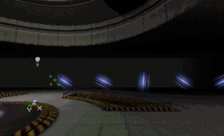
Start Spin (開始スピン)
[Start Spin] (開始スピン) を使用すると、パーティクルがスポーンされるときの回転を設定することができます。違うMinとMax値を入力すると、パーティクルの [開始スピン] がランダムになります。Facing Direction (面している方向)
[Facing Direction] は、ワールド内でパーティクルが面している方向を定義します。この方向は、パーティクルのスピンが計算される前に計算されることを必ず覚えておいてください。少しでもスピンがある場合は、面している方向の後にスピンが適用されるため、面している方向による効果を見ることが難しくなります。このツールの効果の例を示すために、重力に影響される単純なパーティクルシステムを作成しました。パーティクルのテクスチャとして、この矢印を使用しました。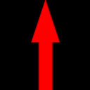
Facing Camera (カメラに面する) はデフォルトで、最も良く使用される方向です。すべてのパーティクルは、どこにカメラがあってもカメラに面して表示されます。下の図が、その例です。[Facing Camera] (カメラに面する) で混乱しやすい部分の1つは、この設定がテクスチャを垂直に反転させることです。もう1つの混乱しやすい側面は、パーティクルのサイズが一定の縦横比を持つことです。これは、XとYの両方のスケールを行う際、(Start Size (開始サイズ) から) Xサイズ が使用されるためです。面している方向が [Facing Camera] に設定されていると、Yサイズは無視されます。
 Along Movement Facing Camera (カメラに面して動きを追跡) は非常に簡単です。パーティクルは、テクスチャの「上」が、パーティクルの移動方向に必ず向いているように、方向を調整します。パーティクルは、それと同時にカメラに面するよう努めますが、カメラがパーティクルの移動方向に向いている場合など、一部の角度ではそれが困難です。以下の2つの図は、この設定の効果を示しています。
Along Movement Facing Camera (カメラに面して動きを追跡) は非常に簡単です。パーティクルは、テクスチャの「上」が、パーティクルの移動方向に必ず向いているように、方向を調整します。パーティクルは、それと同時にカメラに面するよう努めますが、カメラがパーティクルの移動方向に向いている場合など、一部の角度ではそれが困難です。以下の2つの図は、この設定の効果を示しています。
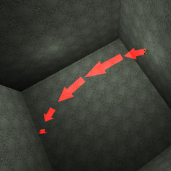
Specified Normal (指定された法線) は、非常に簡単です。パーティクルの法線は Projection Normal (投影法線) によって指定されます。最初の画像の場合、法線はまっすぐ上を向いています (0、0、1)。2つめの画像は、(-0.5, 0.3, 1.0) の法線が使用されています。
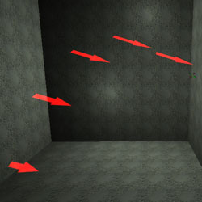
Along Movement Facing Normal (法線に面して動きを追跡) は、[Along Movement Facing Camera] (カメラに面して動きを追跡) に似ていますが、パーティクルはカメラに面するのではなく、指定された Projection Normal (投影法線) に面します。これは、パーティクルがカメラではなく、その移動先を向いている必要がある、滝などの効果に非常に有効です。下図はこの効果を示しています。
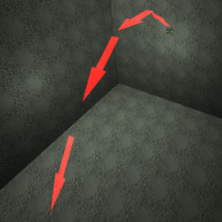
Perpendicular to Movement (動きに垂直) では、パーティクルは移動方向と垂直を向きます。これには不適切な副作用があります。場合によっては、パーティクルが飛んでいる途中に90度回転してしまいます。下の図が、その例です。
Projection Normal (投影法線)
このツールは、 Facing Direction (面している方向) の、[Specified Normal] (指定された法線) と [Along Movement Facing Normal] (法線に面して動きを追跡) 設定で有効となり、使用されます。Use Rotation From: (使用する回転)
[Use Rotation From] (使用する回転) を使用しても、パーティクル全体のパーティクルシステムを回転できます。 この場合、ロケーションと速度に影響しますが、加速度には影響しません。[Use Rotation From] (使用する回転) を使用すると、回転方法を指定できます。[None] に指定すると、パーティクルシステムは回転されません。これにより、たとえばX-Axisはエディタ内のメインX軸と同じ方向に向きます。 [Use Rotation From] (使用する回転) を [Actor] (アクタ) に設定すると、エミッタアクタの回転が使用されます。Advanced bDirectional=Trueに設定されている場合、エミッタに矢印が表示されます。この矢印の方向は、速度とロケーションに使用されるX軸となります。 [Use Rotation From] (使用する回転) を [Offset] (オフセット) に設定すると、[Rotation Offset] (回転オフセット) の設定が使用されます。ここでは、パーティクルシステムにピッチ、ヨー、ロールを適用させる量を設定できます。 [Use Rotation From] (使用する回転) を[Normal] (法線) に設定すると、回転に [Rotation Normal] (回転法線) の設定が使用されます。ここで、プレーンの方向を入力でき、X軸は入力された平面に垂直となります。 たとえば、最初のスクリーンショットには [Rotation Offset] (回転オフセット) が使用されておらず、パーティクルはX = 500の速度で動いています。2つめのスクリーンショットの速度は上記と同じですが、[Use Rotation From] (使用する回転) は [Offset] (オフセット) に設定され、[Rotation Offset] (回転オフセット) のPitchは90に設定されています。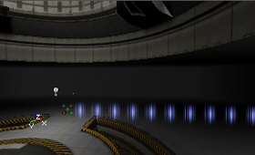

Revolution (旋回)
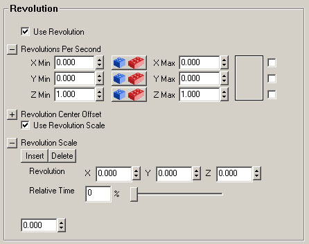
Rotation (回転) は中心点と対称に個々のパーティクルを回転させるのに対し、Revolution (旋回) はパーティクルをスペース内の固定点と対称に回転させます。旋回を使用すると、パーティクルの位置が変化します。Use Revolution (旋回を使用)
[Use Revolution] (旋回を使用) にチェックマークを入れると、旋回を使用できます。Revolution Center Offset (旋回の中心のオフセット)
一般に、パーティクルはパーティクルシステムの中心の周りを旋回します。[Revolution Center Offset] (旋回の中心のオフセット) を使用すると、パーティクルシステムの中心以外の点を中心にパーティクルを回転できます。Revolutions Per Second (1秒あたり旋回数)
[Revolutions Per Second] は、指定された軸の周りを1秒あたりに回転する回数を指定します。Use Revolution Scale (旋回スケールを使用)
[Use Revolution Scale] (旋回スケールを使用) がオンの場合、[Revolution Scale] (旋回スケール) が使用されます。Revolution Scale (旋回スケール)
[Revolution Scale] (旋回スケール) は、[Revolutions Per Second] (1秒あたり旋回数) 範囲の各軸の乗数として使用されます。[Revolution Scale] (旋回スケール) を使用すると、パーティクルのライフタイム間に特定の軸の旋回スピードが増減されます。負の数を使用することにより。旋回の方向を逆にすることもできます。Revolution Scale Repeats (旋回スケール反復回数)
[Revolution Scale Repeats] (旋回スケール反復回数) は、[Revolution Scale] が繰り返される回数です。これを0に設定すると、旋回スケールは1度だけ発生します。これを1に設定すると、旋回スケールは2度発生します。Size (サイズ)
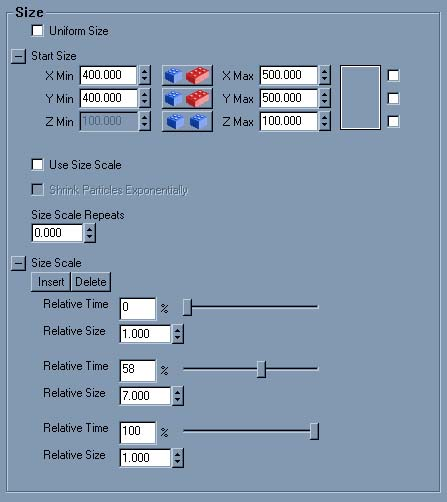
Uniform Size (一定のサイズ)
[Uniform Size] (一定のサイズ) をオンにすると、UとVの両方にXのみが使用されます (またはメッシュにはX、Y、Z)。アスペクト比を守りながら、ランダムなサイズを使用する場合には、この設定が必要です。Start Size (開始サイズ)
[Start Size Range] (開始サイズ範囲) はパーティクルがスポーンされるときのサイズを定義します。スプライトについては、 面している方向 が Facing Camera (カメラに面する) に設定されている場合、X値のみが利用されます。その他すべての Facing Direction (面している方向) の設定については、テクスチャの幅と高さを別々に変更するためにXとYを用いることができます (ただし UniformSize がオフの場合に限ります)。メッシュについては、X、Y、およびZが使用されます (ただし UniformSize がオフの場合に限ります)。デフォルト値は100です。スクリーンショットでは、X(Min) = X(Max) = 50、およびX(Min) = X(Max) = 150の場合を表示しています。
 X(Min) とX(Max) に違う値を入力すると、パーティクルはランダムなサイズを取得します。
X(Min) とX(Max) に違う値を入力すると、パーティクルはランダムなサイズを取得します。

Size Scale (サイズスケール)
[Size Scale] (サイズスケール) は、 Color Scale (カラースケール) とまったく同じように機能します。ただし、カラーではなくサイズを対象に作業を行うことになります。[Use Size Scale] (サイズスケールを使用) をオンにし、かつ [Shrink Particles Exponentially] (パーティクルを補間によって縮小) をオンに設定すると、パーティクルは常に縮小し、サイズスケールを追加する必要はありません。
Collision (衝突)
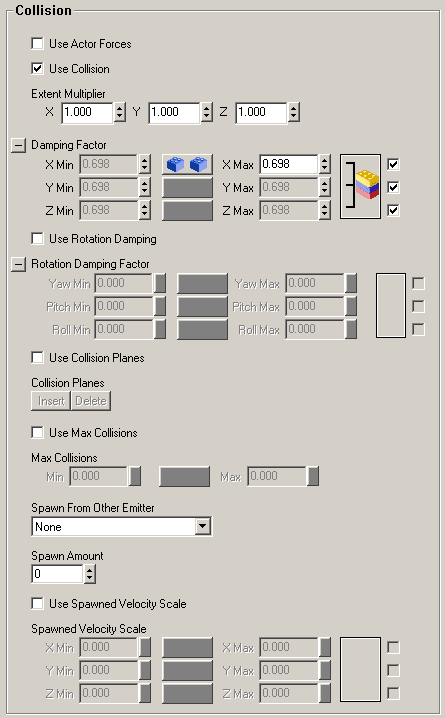
Use Actor Forces (アクタフォースを使用)
[Use Actor Forces] (アクタフォースを使用) を使用すると、force パラメータセットを持つアクタがパーティクルに影響を及ぼすことができます。_(どの種類のアクタでも機能しますが、最も簡単なのはポーンです。その理由は、ポーンの衝突プロパティ都合良く設定されているためです。)_ このforce パラメータは、アクタをダブルクリックして [Properties] (プロパティ) ウィンドウの Force (フォース) カテゴリを選択することで表示できます。[ForceType] (フォースの種類) を FT_DragAlong に設定し、[ForceScale] は0より大きくする必要があります。大きな効果を出すには、[ForceScale] を50より大きく設定してください。[ForceRadius] (フォース半径) の設定は何でもかまいませんが、アクタの [CollisionRadius] (衝突半径) に設定すると最も良く機能します。パラメータ設定を完了した後に、そのアクタがシステムのパーティクル内へ入ると、これらのパーティクルを移動する方向へ放射状に跳ね返します。しかし、アクタがパーティクルの近くで停止し、パーティクルが移動しているとき、パーティクルはアクタの方へ動き、その周りを旋回します。この効果の見た目は良いですが、動きが__非常__に遅い場合があります。うまく実行されるときもありますが、ポーンが少しだけ動いた場合や、ビューが変わると、すべてのパーティクルの動作を再計算する間、数秒間ゲームが一時停止する場合があります。Use Collision (衝突を使用)
注：デフォルト コードベースで座標系が [Relative] に設定されていると、衝突は機能しません。 衝突によって、パーティクルが壁、床、天井で跳ね返っている様子を現実的に作ることができます。たとえば、アニメーションGIFで次のように表示されます。
 衝突を設定しなければ、パーティクルはただ壁の中に消えてしまいます。
衝突を設定しなければ、パーティクルはただ壁の中に消えてしまいます。
 しかし、UseCollisionをオンにすると、パーティクルは壁で跳ね返ります。垂直に壁に衝突すれば、最初のスクリーンショットのように元来たところに跳ね返ります。そうでない場合は、2つめのスクリーンショットのように跳ね返ります。
しかし、UseCollisionをオンにすると、パーティクルは壁で跳ね返ります。垂直に壁に衝突すれば、最初のスクリーンショットのように元来たところに跳ね返ります。そうでない場合は、2つめのスクリーンショットのように跳ね返ります。


Damping Factor (減衰係数)
DampingFactor (減衰係数) を使用すると、パーティクルが壁にぶつかる度に、速度が変わります。速度にこの係数が掛けられます。たとえば、現実の世界でテニスボールを地面に戻せば、跳ね返る高さは地面に当たる度に小さくなります。以下のスクリーンショットでは、加速度Z = -950で、速度がX = 500の設定となっています。パーティクルは地面に向かって落ち、それから跳ね返ります。各スクリーンショットで違いが分かるよう、DampingFactor のZ値が変えられています。このケースではパーティクルが床で跳ね返っているため、使用されているのはZ値です。最初のスクリーンショットで示した通り、DampingFactor が1の場合、パーティクルが生きている間はずっと跳ね返り続けます。たとえば0.9など、1よりも小さい値を入力すると、地面に当たる度に跳ね返りが低くなっていきます (このほうがより現実的です)。
 たとえば1.5など、DampingFactor に1より大きい値を入力すると、パーティクルの跳ね返りはどんどん高くなります (1つめのスクリーンショット)。MinとMaxに違う値を入力すると、1つ1つのパーティクルがMinとMax値の間のどこかにあるランダムな値で跳ね返ります (2つめのスクリーンショット)。
たとえば1.5など、DampingFactor に1より大きい値を入力すると、パーティクルの跳ね返りはどんどん高くなります (1つめのスクリーンショット)。MinとMaxに違う値を入力すると、1つ1つのパーティクルがMinとMax値の間のどこかにあるランダムな値で跳ね返ります (2つめのスクリーンショット)。

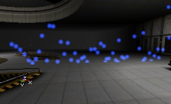
Rotation Damping Factor (回転減衰係数)
回転減衰係数を使用するには、まず [Use Rotation Damping] (回転減衰を使用) にチェックマークを入れておく必要があります。[Rotation Damping Factor] (回転減衰係数) を使用すると、スピンしているパーティクルの減衰係数を設定できます。これは、衝突の減衰係数 と同様に機能しますが、パーティクルが跳ね返る度にスピンを速くまたは遅くする点が異なります。たとえば、[Rotation Damping Factor] (回転減衰係数) のZ-Min および Z-Max 値を0に設定すると、パーティクルが床に最初に跳ね返った時点でスピンは止まります。これは、[Spins Per Second] (1秒あたりのスピン回数) に0が掛けられるためです。以下のスクリーンショットでは、跳ね返った後、すべてのテクスチャの回転が同じになっていることに注目してください。
Extent Multiplier (エクステント乗数)
[Extent Multiplier] (エクステント乗数) はパーティクルの size (サイズ) に掛けられ、衝突検出に使用されます。 サイズ にエクステント乗数をかけた結果で、パーティクルの衝突側面がどこになるかを判断し、その (目に見えない) 側面がサーフェスに到達すると、パーティクルはすぐに跳ね返ります。0はパーティクルの中央を表し、1はパーティクルの通常サイズを表します。1より大きい数値の場合、パーティクルは到達する前に跳ね返ります。これは、パーティクルが回転している場合に便利です。[Extent Multiplier] (エクステント乗数) が1の場合、角が壁に当たる可能性があるためです。Collision Planes (衝突プレーン)
[Use Collision Planes] (衝突プレーンを使用) をオンにすると、パーティクルは跳ね返る目に見えない平面 (プレーン) を作ることができます。プレーンは他の何とも衝突せず、その特定エミッタのパーティクルだけに衝突します。これらのプレーンは、片面となっています。つまり、ある1方向から来たパーティクルはこのプレーンを通り抜けることができますが、別の方向から来た場合は跳ね返るということです。[Collision Planes] (衝突プレーン) 設定内でプレーンを作る必要があります。各プレーンについて、W、X、Y、およびZを入力できます。Wはプレーンからエディタグリッドの中央までの距離で、X、YおよびZはプレーンの法線と、Wからプレーンへの方向を定義します。また、負の値を入力することができます。たとえば、グリッドの別の側へ行く場合や、1方向の向きをひっくり返す場合などです。以下のスクリーンショットでは、赤い点はエディタグリッドの中心を表しています。グリッド自体は256単位で、赤い線は (目に見えない) プレーンを示します。赤い小さな三角は、パーティクルがプレーンを通り抜けることができる方向を示しています。最初のスクリーンショットは、W=256、 X=0、Y=1およびZ=0です。パーティクルは南へ進んで壁で跳ね返り、北へ戻っているときにプレーンで再び跳ね返ります。2つめのスクリーンショットで、Wは-256に、Yは-1に変更されているため方向が逆になり、パーティクルはプレーンの反対側で跳ね返ります。

Max Collisions (最大衝突回数)
[Use Max Collisions] (最大衝突回数) をオンにすると、パーティクルはライフタイム の設定に関係なく、[MaxCollosions] に入力された (ランダムな) 回数跳ね返った後消滅します。Spawn From Other Emitter (別のエミッタからスポーン)
SpawnFromOtherEmitter (別のエミッタからスポーン) を使用すると、パーティクルが跳ね返る場所で何かをスポーンさせることができます。たとえば、火花が当たった場所に残る光や、浅い水の中でのさざ波などです。これが機能するためには、同じエミッタアクタの中に2つめのエミッタを作成し、そのエミッタを [Spawn From Other Emitter] (別のエミッタからスポーン) に指定する必要があります。この新しいエミッタのパーティクルは、パーティクルが跳ね返る場所でスポーンされるものです (これは、跳ね返り地点とはわずかに異なります。大きな Extent Multiplier (エクステント乗数) を持つ場合は特に、この違いが大きくなります) 。新しいエミッタについては、 Respawn Dead Particles (死んだパーティクルを再スポーン) と Automatic Spawning (自動スポーン) をオフにしてください。こうしなれば、これらのパーティクルが、ワールド内のパーティクルシステムの場所で間違った瞬間にスポーンされる可能性があるためです。 次に、[Spawn Amount Range] (スポーン量範囲) で、跳ね返るパーティクルがサーフェスに衝突するときスポーンさせたいパーティクルの数を入力します。何かが発生するためには、1以上の数値を入力する必要があります。Spawned Velocity Scale (スポーン後の速度スケール)
[Use Spawned Velocity Scale] (スポーン後に速度スケールを使用) にチェックマークを入れると、跳ね返るときにスポーンされるパーティクルにも速度を与えることができます。これには、[Spawned Velocity Scale] (スポーン後の速度スケール) 設定を使用し、最大、最小のX、Y、およびZ値を入力します。パーティクルが跳ね返ると、スポーンしたパーティクルはサーフェスの法線方向のみに速度を取得します。これを利用する最適の方法は、X、Y、およびZの最小と最大値をすべて同じ正の値に定義することです。これによって、スポーンされたパーティクルは法線の方向に移動します (X、Y、Zにマイナスの値を入力すると、スポーンされたパーティクルは跳ね返ったサーフェスに向かって動きます)。 「スポーン後の速度スケール」は、 Facing Direction (面している方向) に使用すると効果的です。[Facing Direction] (面している方向) を [Perpendicular To Movement] (動きに垂直) に設定し、スポーン後の速度を非常に小さい値 (1.0など) に設定すると、2つめのアーティクルは跳ね返ったサーフェスと整列されます。これは、衝撃によって残るマークとしてもよく機能します。Sounds (サウンド)
Spawning Sound (スポーン時のサウンド)
スポーン時のサウンドは、[Spawning Sound] (スポーン時のサウンド) プルダウンを Don't Use Spawning Sounds (スポーン時のサウンドを使用しない) 以外の何に設定しても使用可能になります。[Spawning Sound] (スポーン時のサウンド) のその他のオプションは次のとおりです。 * Linear Global / Linear Local - 両方とも、パーティクルがスポーンされる時に線形順序でサウンドを再生します。パーティクルがスポーンされる度に、[Spawning Sound Index] (スポーン時のサウンドインデックス) によって指定された範囲内で、[Sound Array] (サウンド配列) 内の次の中が再生されます。 * Random - [Spawning Sound Index] (スポーン時のサウンドインデックス) によって指定された範囲内で、[Sound Array] (サウンド配列) 内のサウンドをランダムに再生します。Spawning Sound Index (スポーン時のサウンドインデックス)
[Spawning Sound Index] (スポーン時のサウンドインデックス) は、サウンドを再生する範囲を選択します。[Spawning Sound Index] (スポーン時のサウンドインデックス) を使用してサウンド範囲を指定する場合、[Min] と [Max] は異なる数値である必要があります。たとえばMin=0とMax=0など同じ値を使用すると、[Sound Array] 内のすべてのサウンドが使用されます。Spawning Sound Probability (スポーン時のサウンド確率)
[Spawning Sound Probability] (スポーン時のサウンド確率) は、スポーン時にあるサウンドが再生される確率の範囲です。「なぜ確率なのに範囲なのだろう？」 と思うかもしれません。私も疑問に思います。Collision Sound (衝突サウンド)
衝突サウンドは、[Collision Sound] プルダウンを Don't Use Collision Sounds (衝突時のサウンドを使用しない) 以外の何に設定しても、使用可能になります。[Collision Sound] (衝突サウンド) のその他のオプションは次のとおりです。 * Linear Global (リニアグローバル) - パーティクルのライフタイムにかかわらず、[Sound Array] (サウンド配列) 内にあるサウンドをループで再生します。ループはパーティクル毎に再生されるため、大量のパーティクルが同時にスポーンされ、壁に当たれば、すべてのパーティクルが同じ衝突サウンドを再生します。 * Linear Local (リニアローカル) - 各パーティクルのループがそのライフタイムの終わりにリセットされることを除き、[Linear Global] (リニアグローバル)と同じです。つまり、[Sound Array] が「ピョン」、「ボッ」、および「ドスッ」というサウンドをこの順で含んでいれば、パーティクルは必ず「ピョン」から始まります。パーティクルがワールドと2回しか衝突しない場合、次にそのパーティクルが生まれて初めて衝突しても、「ドスッ」という音にはなりません。ただし、[Linear Global] では「ドスッ」となります。 * Random (ランダム) - [Sound Array] (サウンド配列) 内のサウンドをランダムに再生します。Collision Sound Index (衝突サウンドインデックス)
[Collision Sound Index] (衝突サウンドインデックス) は、サウンドを再生する範囲を選択します。[Collision Sound Index] (衝突サウンドインデックス) を使用してサウンド範囲を指定する場合、[Min] と [Max] は異なる数値である必要があります。たとえばMin=0とMax=0など同じ値を使用すると、[Sound Array] 内のすべてのサウンドが使用されます。Collision Sound Probability (衝突サウンド確率)
[Collision Sound Probability] (スポーン時のサウンド確率) は、衝突時にあるサウンドを再生する確率の範囲です。「なぜ確率なのに範囲なのだろう？」 と思うかもしれません。私も疑問に思います。Sound Array (サウンド配列)
[Sound Array] (サウンド配列) は、[Sound] (サウンド)、[Radius] (半径)、[Pitch] (音の高さ)、 [Volume] (ボリューム)、および [Probability] (確率) を含むサウンドの配列です。 * [Sound] (サウンド) を設定するには、サウンドブラウザ内でサウンドを選択し、 Use (使用) をクリックしてください。 * [Radius] (半径) は、Unreal単位ではない、サウンド半径のためのstand単位で表されます。64が、ちょうど良い値のようです。 * [Pitch] については、1.0 がデフォルトのピッチです。 * [Volume] 設定は0.0と1.0の間の値しか受け付けません。1.0が標準ボリュームで、それより大きくはできません。 * [Probability] (確率) は、サウンドが再生するよう指示された場合に、このサウンドが再生される確率です。 Spawning Sound Probability (スポーン時のサウンド確率) または Collision Sound Probability (衝突サウンド確率) に基づいて、サウンドの再生が行われます。Mesh (メッシュ)
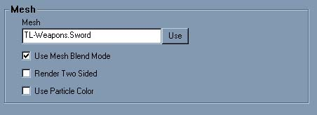
Mesh (メッシュ)
これは Texture (テクスチャ) フィールドに非常によく似ています。静的メッシュブラウザ内でこのメッシュに使用するメッシュを選択し、次に Use ボタンをクリックします。Use Mesh Blend Mode (メッシュブレンドモードを使用)
これがオンの場合、メッシュのブレンドモードが使用されます。つまり、パーティクルをレベル内で落としたときに、パーティクルそのままに見えることを意味します。これがオフになっている場合、パーティクルは Texture (テクスチャ) カテゴリで定義されたブレンドモードを使用します。Render Two Sided (両面をレンダリング)
これが設定されていると、メッシュはすべてのトライアングルを両面でレンダリングします。これはUseMeshBlendMode (メッシュブレンドモードを使用) がオフの場合にのみ有効です。Use Particle Color (パーティクルカラーを使用)
これが設定されている場合、メッシュは Color/Fading? (カラー/フェード) 内の設定を使用します。 UseMeshBlendMode (メッシュブレンドモードを使用) がオンの場合にのみ有効です。Spark (火花)
 このパーティクルエミッタは火花を生成します。たとえば、溶接している時に見える火花などです。このエミッタは、テクスチャの色を使って、テクスチャを1つの細い線に変えます。 Acceleration (加速)、 Start Velocity (開始速度)、 Lifetime (ライフタイム)、および Start Location (開始ロケーション) のような設定もこれに適用されますが、パーティクルは単なる線であるため、 Collision (衝突)、 Rotation (回転)、 Size (サイズ) などの設定は適用されません。 Texture は、パーティクルに塗られる色として適用されますが、単なる線であるため、テクスチャ全体を見ることはできません。 Color Scale (カラースケール) および Fading (フェード) などは機能しますが、セグメントあたりで機能するため、期待するような外見にはなりません。スクリーンショットでは、ランダム Start Location (開始ロケーション) と白いテクスチャ上に薄い赤 Color Scale (カラースケール) となっています。
このパーティクルエミッタは火花を生成します。たとえば、溶接している時に見える火花などです。このエミッタは、テクスチャの色を使って、テクスチャを1つの細い線に変えます。 Acceleration (加速)、 Start Velocity (開始速度)、 Lifetime (ライフタイム)、および Start Location (開始ロケーション) のような設定もこれに適用されますが、パーティクルは単なる線であるため、 Collision (衝突)、 Rotation (回転)、 Size (サイズ) などの設定は適用されません。 Texture は、パーティクルに塗られる色として適用されますが、単なる線であるため、テクスチャ全体を見ることはできません。 Color Scale (カラースケール) および Fading (フェード) などは機能しますが、セグメントあたりで機能するため、期待するような外見にはなりません。スクリーンショットでは、ランダム Start Location (開始ロケーション) と白いテクスチャ上に薄い赤 Color Scale (カラースケール) となっています。
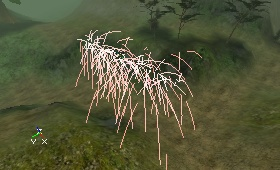
スパークエミッタを機能させるには、スプライトまたはメッシュエミッタを追加したのと同じ方法でエミッタを追加します。最初に速度または加速度を設定し、次に [Spark] (火花) プロパティへ行きます。そこで、 Time Between Segments (セグメント間隔) を1に設定すると、すでにエミッタが機能し始める様子を見ることができます。Line Segment Range (ラインセグメント範囲)
[Line Segments Range] (ラインセグメント範囲) は、火花の線の長さと、どれだけ表示されるかを定義します。違うMinとMax値を入力すると、長さをランダムにすることができます。この設定をあまりに高く、または低くすると (他の設定によって左右されます)、スパークエミッタは動作しません。最初のスクリーンショットはMin = Max = 5となっており、2つ目のスクリーンショットはMin = Max = 3と設定されています。5に設定することが、ほとんどの場合最も適しています。

Time Before Visible (表示されるまでの時間)
[Time Before Visible Range] (表示されるまでの時間) は、あまり役には立たないようです。Time Between Segments (セグメント間隔)
[Time Between Segments] (セグメント間隔) の効果は、ある程度加速をつけてラインをカーブさせる場合に最もきれいに見えます。[Time Between Segments Range] (セグメント間隔の範囲) は、ラインをいくつのセグメントに分割するかを定義します。たとえば0.1などの低い値に設定されると、ラインは数多くのセグメントに分割され、曲線がスムーズになります (1つ目のスクリーンショット)。もし高い値に設定すると (たとえば0.5)、線がセグメントに分かれているのをはっきり見ることができます。(2つめのスクリーンショット)。高い値の [Time Between Segments] (セグメント間隔) は、パーティクルの数が少ないためパフォーマンスが良いことを意味します。ただし、見た目はあまりよくありません。
 [Time Between Segments] (セグメント間隔) が低い値の場合、パーティクルがより多く作成されることになるため (それぞれのラインセグメントはパーティクルです)、スムーズに表示されるためには、 Max Particles (最大パーティクル数) をより高い値に設定しておく必要があります。 Max Particles (最大パーティクル数) が非常に高い場合、次のようになります (ここでも、[Time Between Segments] の値が高い場合と低い場合の2つを示しています)。
[Time Between Segments] (セグメント間隔) が低い値の場合、パーティクルがより多く作成されることになるため (それぞれのラインセグメントはパーティクルです)、スムーズに表示されるためには、 Max Particles (最大パーティクル数) をより高い値に設定しておく必要があります。 Max Particles (最大パーティクル数) が非常に高い場合、次のようになります (ここでも、[Time Between Segments] の値が高い場合と低い場合の2つを示しています)。


Beam (ビーム)
 ビームエミッタは、稲妻のようなものを作るのに非常に便利です。エミッタは選択されたテクスチャを、 High Frequency Points (高周波ポイント) および Low Frequency Points (低周波ポイント) を使用して光線として伸ばします。稲妻ができるには、それぞれのポイントが2つ以上ある必要があります。各パーティクルは上記のようなビームになり、1度作成されるとパーティクルは動きません。稲妻を動かすには、古いビームを消滅させながら常に新しいビームを作成し続けるか、またはカラースケールを使用して稲妻を点滅させます。通常、ビームは1つの曲がった線だけですが、枝を加えることができます。
はじめに：新しいビームエミッタを作成し、すべての設定をデフォルトのままにして速度を加えます。すると、線が見えてきます。ビームの長さは、速度とライフタイムの値によって異なります。
ビームエミッタは、稲妻のようなものを作るのに非常に便利です。エミッタは選択されたテクスチャを、 High Frequency Points (高周波ポイント) および Low Frequency Points (低周波ポイント) を使用して光線として伸ばします。稲妻ができるには、それぞれのポイントが2つ以上ある必要があります。各パーティクルは上記のようなビームになり、1度作成されるとパーティクルは動きません。稲妻を動かすには、古いビームを消滅させながら常に新しいビームを作成し続けるか、またはカラースケールを使用して稲妻を点滅させます。通常、ビームは1つの曲がった線だけですが、枝を加えることができます。
はじめに：新しいビームエミッタを作成し、すべての設定をデフォルトのままにして速度を加えます。すると、線が見えてきます。ビームの長さは、速度とライフタイムの値によって異なります。

このビームには5つの色付ドットテクスチャがあることがご覧いただけます。希望に応じて、もっと適した Texture (テクスチャ) に変更できます。以下の例では、四角い、白いテクスチャが使用されています。稲妻の外見を改善するには、適切なテクスチャを使用してください。稲妻ののクスチャは次のように90°に回転されているはずです。
 稲妻を本物のように光らせる最適な方法は、 [[#ColorScale][color scale] (カラースケール) を使用する方法です。これにより、ライフタイムを通して、光線全体の色が変化します。アニメーションのスクリーンショットには、オレンジと黄色、2つの[[#ColorScale][カラースケール] が使用されており、パーティクルの lifetime (ライフタイム) は0.6秒に設定されています。点滅効果を出すため、 Fade In (フェードイン) と Fade Out (フェードアウト) も使用できます。
稲妻を本物のように光らせる最適な方法は、 [[#ColorScale][color scale] (カラースケール) を使用する方法です。これにより、ライフタイムを通して、光線全体の色が変化します。アニメーションのスクリーンショットには、オレンジと黄色、2つの[[#ColorScale][カラースケール] が使用されており、パーティクルの lifetime (ライフタイム) は0.6秒に設定されています。点滅効果を出すため、 Fade In (フェードイン) と Fade Out (フェードアウト) も使用できます。

Number of Beam Planes (ビームプレーンの数)
このオプションは、ビームを構成するプレーンの数を定義します。0と1は同じこと、つまり1つのシートを意味します。スクリーンショットは、0と、3と、10を表示しています。

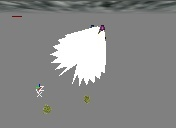
Beam Texture Scale (ビーム テクスチャ スケール)
デフォルトで、テクスチャはビームについて1回だけ繰り返されます。ビームでは、 BeamTextureUScaleを使用してBeamの長さあたりにテクスチャが繰り返される回数を設定できます。また、 BeamTextureVScale を使用して、ビームの幅あたりで繰り返される回数を設定できます。スクリーンショットでは、4回繰り返されています。

Determine End Point By (終了点の決定方法)
 このプロパティは、ビームのEndPoint (終了点) を決定するものを設定します。StartPoint (開始点) はエミッタアクタのロケーションと Location の設定によって決定されます。ビームのStartPoints については 後で 詳しく説明します。
[Velocity] (速度) がデフォルト設定です。速度が選択されていると、終了点はパーティクルの Velocity (速度) とライフタイム によって決定されます。次に、ビームの長さは、StartVelocityRange (開始速度範囲) 値とパーティクルの Lifetime (ライフタイム) によって決定されます。ビームの方向は、StartVelocityRange (開始速度範囲) のX、Y、およびZ値で決定されます。ここでも、たとえばX(Max) = Y(Max) = Z(Max) = +1000 および X(Min) = Y(Min) = Z(Min) = -1000などと設定することでランダム値を使用でき、各ビームはこの範囲にあるランダムな値を取得します。下図のアニメーションGIFでも、ほとんど同じことを行います。1本以上のビームが表示されるようになりました。これは、MaxParticles がデフォルトで10に設定されているためです。また、稲妻は通常地面にまっすぐ向かうだけです。そのため、StartVelocityRange (開始速度範囲) にマイナスのZ値を使用するとよいでしょう。
このプロパティは、ビームのEndPoint (終了点) を決定するものを設定します。StartPoint (開始点) はエミッタアクタのロケーションと Location の設定によって決定されます。ビームのStartPoints については 後で 詳しく説明します。
[Velocity] (速度) がデフォルト設定です。速度が選択されていると、終了点はパーティクルの Velocity (速度) とライフタイム によって決定されます。次に、ビームの長さは、StartVelocityRange (開始速度範囲) 値とパーティクルの Lifetime (ライフタイム) によって決定されます。ビームの方向は、StartVelocityRange (開始速度範囲) のX、Y、およびZ値で決定されます。ここでも、たとえばX(Max) = Y(Max) = Z(Max) = +1000 および X(Min) = Y(Min) = Z(Min) = -1000などと設定することでランダム値を使用でき、各ビームはこの範囲にあるランダムな値を取得します。下図のアニメーションGIFでも、ほとんど同じことを行います。1本以上のビームが表示されるようになりました。これは、MaxParticles がデフォルトで10に設定されているためです。また、稲妻は通常地面にまっすぐ向かうだけです。そのため、StartVelocityRange (開始速度範囲) にマイナスのZ値を使用するとよいでしょう。
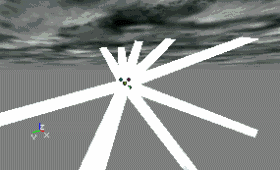
[Distance] (距離) は [Velocity] (速度) と同じように適用されますが、StartVelocityRange (開始速度範囲) のみが、ビームの方向を定義します。長さは、 Beam Distance (ビーム距離) を使用してエディタの単位で設定されます。 [Offset] (オフセット) を使用すると、EndPoint (終了点) を相対座標で決定できます。BeamEndPoints[0] 内の[Offset] に座標を入力する必要があります。これを行うには、 Beam End Points (ビーム終了点) を展開して、[Insert] (挿入) ボタンを押します。
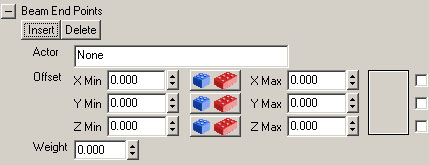
[Offset] (オフセット) 内で、ビームの終了点のX、Y、およびZ座標範囲を入力します。座標はStartPoint (ほとんどの場合これがエミッタアクタ) に準拠しているため、たとえばX = 0、Y = 0、Z = -1000 はEndPointはStartPointの1000単位下にあることを表します。これが機能するには、[Weight] (重要性) を0よりも大きく設定する必要があります。ここでも、EndPointをランダムなロケーションにしたい場合、MinとMaxに別々の値を入力することができます。追加の[Beam End Points] (ビーム終了点) を追加すると、ビームは[Beam End Points] の1つをランダムに使用します。[Weight] (重要性) を指定すると、各 [Beam End Point] (ビーム終了点) の重要性を設定することができます。これは、それぞれの終了点が使用される確率です。すべての [Beam End Point] (ビーム終了点) に重要性1を設定すると、すべての機会は均等に分割されます。オフセットX = Y = Z = 0 と設定すると、終了点と開始点は同じになり、ビームはなくなります。稲妻を数回だけ落としたい場合、この設定を使用して、稲妻が必要ない時は非表示にできます。[Beam End Point] (ビーム終了点) に重要性0を設定すると、すべての機会は均等に分割されます。 [TraceOffset] (トレースオフセット) は [Offset] (オフセット) と同じことを行いますが、稲妻は、固体表面があると実際の終了点には行かずに、その固体表面に落ちます。[TraceOffset] (トレースオフセット) を相対座標と組み合わせるとうまく動作しません。 [OffsetAsAbsolute] (絶対値としてオフセット)は [Offset] (オフセット) と同じことを行いますが、相対座標の代わりにワールド座標を使用してオフセット範囲を解釈します。このため、X = Y = Z = 0なら、ビーム終点が原点となります。 [Actor] (アクタ) を使用すると、ビームを特定のアクタへ当てることができます。これは、 [[#BeamEndPoints][Beam End Points] (ビーム終了点) も使用します。ただし、この場合は オフセットプロパティではなく、[Actor Tag] (アクタタグ) プロパティに値を入力する必要があります。稲妻は、(アクタのEventプロパティ内で) そのタグがつけられたアクタに直接落ちます。稲妻が異なるアクタにランダムに当たるようにしたい場合、さらに多くの [Beam End Points] (ビーム終了点) を追加し、各 [Beam End Points] (ビーム終了点) 内に異なるアクタタグを入力する必要があります。もちろん、アクタにもこれらのタグを与えてください。3本の木に同じタグを与え、1つめの [Beam End Point] (ビーム終了点) のみを使用しても機能せず、稲妻は3本の木の1本にしか落ちません。ここでも、各 [Beam End Points] (ビーム終了点) が使用される確率を示す、各終了点の [Weight] (重要性) に、0以上を設定する必要があります。 たとえば、FullTree、FullTree2、およびFullTree3のタグを持つ3本の木があり、それぞれの木に稲妻をランダムに落としたいが、FullTree3に他の木の2倍多く落としたい場合、次のプロパティをエミッタに与えてください。

 アクタが動いていると、ビームはそれについていきます。
アクタが動いていると、ビームはそれについていきます。
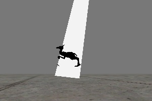
Beam Texture Range (ビーム テクスチャ範囲)
Determine End Point By (終了点の決定方法) が [Velocity] (速度) に設定されているときの、ビームの長さを決定します。Beam End Points (ビーム終了点)
Determine End Point By (終了点の決定方法) が [Offset] (オフセット)、[Actor] (アクタ) および [TraceOffset] (トレースオフセット) に設定されているときの、ビームの様々な終了点を決定します。Trigger Actor End Point (トリガアクタ終了点)
[Trigger Actor End Point] (トリガアクタ終了点) にチェックマークが入っている場合、ビームは、当たったアクタをトリガします。これは、 Determine End Point By (終了点の決定方法) が [Actor] (アクタ) に設定され、 Beam End Points (ビーム終了点) 配列内に有効なアクタタグがある場合にのみ機能します。たとえば、稲妻の落下地点で衝撃効果をスポーンするために使用できます。Beam Noise (ビームノイズ)
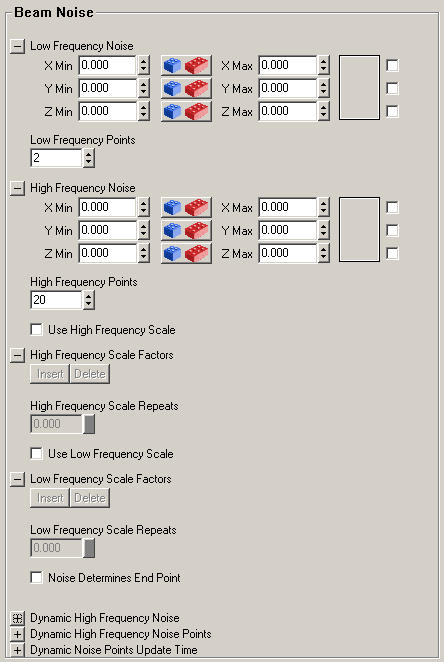
ここでは、ビームノイズを加えることができます。[High Frequency Points] (高周波ポイント) および [Low Frequency Points] (低周波ポイント) を使用できます。両方とも、まったく同じ効果ですが、それぞれを独立して使用できます。たとえば、稲妻に2、3個の屈曲に多くの小さな屈曲を与えることができます。2つ以上の [High Frequency Point] (および2つの [Low Frequency Point])を設定する必要があります。これらは、開始点と終了点を表します。0に設定すると、エディタはクラッシュします。1に設定すると、ビームはできません。2に設定すると、ビームは常にまっすぐになります。[High Frequency Point] (高周波ポイント) が3 (かつ [Low Frequency Point] が2) の場合、ビームの半分に1つの屈曲ができます。値が高ければ高いほど、屈曲の数が多くなります。[High or Low Frequency Noise Range] (高または低周波ノイズ範囲) のX、Y、およびZに最大値と最小値を入力して、屈曲のサイズを指定できます。この方法で、屈曲の方向、サイズを設定することができます。また、それをランダムに設定できます。実際には、必ずランダムにする必要があります。そうでなければ、希望する効果は得られません。たとえば、[High Frequency Noise Range] (高周波ノイズ範囲) において、Y(Max) = 1000 and Y(Min) = -1000 で、4つの[High Frequency Point] (高周波ポイント) がある場合、スクリーンショットのようになります。1つのパーティクルはライフタイムの間に変化しません。そのため、稲妻を動かすには、新しいパーティクルが十分速くスポーンされるように ライフタイム を短くしておくことが必要です。 また、[High Frequency Scale] (高周波スケール) を使用することができます。[High Frequency Scale] (高周波スケール) は [#ColorScale][Color Scale]] (カラースケール)、 Size Scale (サイズスケール)、その他と類似していますが、ビームの様々な場所で、 High Frequency Noise Range (高周波ノイズ範囲) を定義します。[High Frequency Scale] (高周波スケール) は [High Frequency Points] (高周波ポイント) が多いビームで最高の効果が出ます。たとえば、100に設定します。[High Frequency Scale] (高周波スケール) がなければ、ビーム全体はどこでも同じ [Noise Range] (ノイズ範囲) になります。
また、[High Frequency Scale] (高周波スケール) を使用することができます。[High Frequency Scale] (高周波スケール) は [#ColorScale][Color Scale]] (カラースケール)、 Size Scale (サイズスケール)、その他と類似していますが、ビームの様々な場所で、 High Frequency Noise Range (高周波ノイズ範囲) を定義します。[High Frequency Scale] (高周波スケール) は [High Frequency Points] (高周波ポイント) が多いビームで最高の効果が出ます。たとえば、100に設定します。[High Frequency Scale] (高周波スケール) がなければ、ビーム全体はどこでも同じ [Noise Range] (ノイズ範囲) になります。
 [High Frequency Scale] (高周波スケール) を使用するには、まず [Use High Frequency Scale] (高周波スケールを使用) をオンに設定し、 Color Scale (カラースケール) を追加したのと同じ方法で [High Frequency Scale] (高周波スケール) を追加します。[High Frequency Scale Factors] (高周波スケール係数) を展開し、十分なスケール係数が追加されるまで [Insert] (挿入)ボタンをクリックしていきます。周波数スケールは [High Frequency Noise Range] (X、Y および Z 別々に) を乗じます。また、[Relative Length] (相対長さ) によって、ビーム上でこの乗数を生じさせたいロケーションを定義します。100%はビーム全体にわたる長さを表します。[High Frequency Scale Factor] (高周波スケール係数) の [Relative Length] (相対長さ) を70%に設定すると、最初のビームの70%には、[High Frequency Scale Factor] (高周波スケール係数) のスケールが適用され、次の[High Frequency Scale Factor] (高周波スケール係数) の [Relative Length] (相対長さ) を100%に設定すると、残りの30%にこの周波スケールが適用されます。次のスクリーンショットでは、1つめの [Frequency Scale] (周波スケール) のX、Y、およびZが1で、2つめの [Frequency Scale] (周波スケール) のX、Y、およびZが10となっています。
[High Frequency Scale] (高周波スケール) を使用するには、まず [Use High Frequency Scale] (高周波スケールを使用) をオンに設定し、 Color Scale (カラースケール) を追加したのと同じ方法で [High Frequency Scale] (高周波スケール) を追加します。[High Frequency Scale Factors] (高周波スケール係数) を展開し、十分なスケール係数が追加されるまで [Insert] (挿入)ボタンをクリックしていきます。周波数スケールは [High Frequency Noise Range] (X、Y および Z 別々に) を乗じます。また、[Relative Length] (相対長さ) によって、ビーム上でこの乗数を生じさせたいロケーションを定義します。100%はビーム全体にわたる長さを表します。[High Frequency Scale Factor] (高周波スケール係数) の [Relative Length] (相対長さ) を70%に設定すると、最初のビームの70%には、[High Frequency Scale Factor] (高周波スケール係数) のスケールが適用され、次の[High Frequency Scale Factor] (高周波スケール係数) の [Relative Length] (相対長さ) を100%に設定すると、残りの30%にこの周波スケールが適用されます。次のスクリーンショットでは、1つめの [Frequency Scale] (周波スケール) のX、Y、およびZが1で、2つめの [Frequency Scale] (周波スケール) のX、Y、およびZが10となっています。

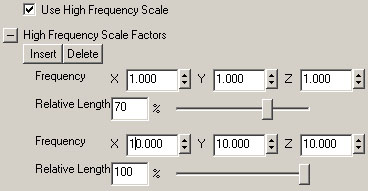
スケールを1回以上繰り返すには、 Color Scale (カラースケール) やその他のスケールと同じ方法で [High Frequency Scale Repeats] (高周波スケール反復回数) を使用できます。たとえば、次は [High Frequency Scale Repeats] = 2 になっている例です。 [Low Frequency] (低周波) 設定は [High Frequency] (高周波) 設定とまったく同じことを行います。低周波と高周波は、それぞれに独立して機能し、それぞれを「経由して」使用することもできます。たとえば、多数の小さなHigh Frequency Points (高周波ポイント) と、少数の、非常に大きな [#LowFrequencyPoints][Low Frequency Points]] (低周波ポイント) を使用できます。すると、以下のスクリーンショットのように、ビームには数個の大きな屈曲と、多くの小さな屈曲が同時にできます。
[Low Frequency] (低周波) 設定は [High Frequency] (高周波) 設定とまったく同じことを行います。低周波と高周波は、それぞれに独立して機能し、それぞれを「経由して」使用することもできます。たとえば、多数の小さなHigh Frequency Points (高周波ポイント) と、少数の、非常に大きな [#LowFrequencyPoints][Low Frequency Points]] (低周波ポイント) を使用できます。すると、以下のスクリーンショットのように、ビームには数個の大きな屈曲と、多くの小さな屈曲が同時にできます。
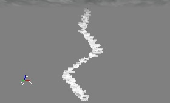
[NoiseDeterminesEndPoint] (ノイズ定義終了点) を使用すると、ビームに適用されたノイズが、その終了点にも適用されます。これはほとんどの場合、既に適用されていますが、DetermineEndPointBy (終了点の決定方法) 設定がPTEP_Actorのときなど、終了点のロケーションがロックされている場合があります。この場合、終了点は指定されたアクタの中心点に設定されます。しかし、これは望ましい効果を生まない可能性があります。まったく同じ場所に繰り返し稲妻が落ちるのは少し奇妙に見えるかもしれません。このボックスにチェックマークを入れることで、ビームは望ましいアクタにランダムに当たります。ビームがトリガ可能なアクタに当たっている場合、ビームが視覚的にアクタに当たっていなくてもノイズが終了点を定義できるため、アクタのトリガは停止されません。ノイズの量が大きければ、視覚的不具合が発生する場合があることに注意してください。たとえば、ビームが木に当たって、火のパーティクルシステムを起動するとしましょう。しかし、稲妻が地面に落ちて、40フィート離れた木が炎につつまれるというのは不自然です。ノイズの量を減らすことで、この問題を解決できるはずです。 [Dynamic High Frequency Noise] (ダイナミック高周波ノイズ) は、ビームをライフタイムの間に実際に動かすために使用されます。この機能は、上記の [High Frequency Points] (高周波ポイント) を使用します。ダイナミックノイズの唯一の欠点は、ビームエミッタ内の1つめのビームでしか機能しないことです。1つ以上のビームがある場合、ダイナミックノイズは追加のビームには適用されません。高周波ポイントの動きは、[Dynamic Noise Points Update Time] (ダイナミックノイズポイント更新時間) によって決定される時間間隔により計算されます。ビームを連続して更新したい場合は、[Dynamic Noise Points Update Time] (ダイナミックノイズポイント更新時間) を0、または非常に小さい番号に設定します。各時間ステップにおいて、[Dynamic High Frequency Noise Points] (ダイナミック高周波ノイズポイント) の最小値と最大値の間の高周波ポイントが、[Dynamic High Frequency Noise] (ダイナミック高周波ノイズ) を基づいて、ランダムな量でよってゆがめられます。高周波ポイントは、ビームの最初にインデックス0で開始され、総ポイント数から1ポイント少ないポイントで終わります。ビームの高周波ポイントが20で、[Dynamic High Frequency Noise Points] (ダイナミック高周波ノイズポイント) が0から10に設定されれば、半分のビームだけが動的に動きます。Beam Branching (ビーム分岐)
Use Branching (分岐を使用)、Branch Emitter (分岐エミッタ)
次に、1つめのビームエミッタの [Beam Branching] (ビーム分岐) プロパティを開きます。[Use Branching] (分岐を使用) ボックスをオンにし、次に、最初の追加ビームエミッタの1つに [Branch Emitter] (分岐エミッタ) を設定します。これで、選択したビームエミッタが分岐に使用されます。Branch Probabilty (分岐確率)
[BranchProbability] (分岐確率) を使用すると、分岐が表示される確率を指定できます。MinとMaxの両方を1に設定すると、すべての分岐が表示されます ([Max Particles] (最大パーティクル数) 内で設定した分岐の数)。MinとMaxを1に設定すると、分岐を発生させているエミッタ上のビームの数次第で、分岐はメインのビームの上部にのみ表示されます。この原因は、ビームがスポーンされる機会がある度にスポーンするためです。Min=0 および Max=1 に指定すると、分岐はビーム全体で分割されますが、分岐エミッタのすべてのビームが使用されない可能性があります。最適の結果を見つけるには、この設定をいろいろ試してみる必要があります。Branch Spawn Amount Range (分岐スポーン量範囲)
[Branch Spawn Amount Range] (分岐スポーン量範囲) では、MinおよびMaxの両方が1より大きくなければなりません。そのうちの1つを1未満に設定すると、分岐が1つも表示されなくなります。[Branch Spawn Amount] (分岐スポーン量) は、各高周波ポイントにてスポーンされるビームの数です。これが1の場合、各ポイントに少なくとも1つの分岐ができます。これが10の場合、各ポイントから10までの分岐が出てきます。Branch High Frequency Points (分岐高周波ポイント)
これは、ビームの分岐がスポーンされる高周波ポイントの範囲です。ビームの原点に、0から始まるインデックスが高周波ポイントにふられ、高周波ポイントの数だけインデックスが順にふられます。この [Max] は、高周波ポイントの数をはるかに超えて設定できることができます。そのため、この設定について悩みたくない場合は、[Min] を0に設定した上で、[Max] を1000などの非常に大きい数に設定してください。Linkup Lifetime (リンクアップ ライフタイム)
[Linkup Lifetime] (リンクアップ ライフタイム) がオフになっていると、大きなビームが移動した後に分岐だけが残ることがあります。これは、分岐の lifetime (ライフタイム) のほうが長い場合に起こります。この問題は、[Linkup Lifetime] (リンクアップライフタイム) をオンに設定すると解消されます。これは、分岐のライフタイムにかかわらず、メインビームが生きている間は分岐も残るためです。分岐の Respawn Dead Particles (死んだパーティクルの再スポーン) は必ずオフにしておいてください。これがオンになっていて、[Linkup Lifetime] がオンに設定されている場合、分岐は間違った場所にスポーンされます。 たとえば下図では、赤いメインビームに12個の [#LowFrequencyPoints][Low Frequency Points]] (低周波ポイント) があり、25個ある緑色の分岐のスポーンポイントとして使用できる60個の非常に小さな High Frequency Points (高周波ポイント) があります。 2つめのビームエミッタの [Beam Branching] (ビーム分岐) プロパティで、(分岐に使用されたものと) 同じ設定を繰り返すことができます 。このエミッタ内でも、 Use Branching (分岐を使用) をオンに設定し、次に Branch Emitter (分岐エミッタ) を最後のエミッタに設定します。これにより、分岐にサブ分岐ができます。すべての分岐にサブ分岐ができるわけではないことを覚えておいてください。特に、一番上に近い分岐のサブ分岐は最も少なくなります。また、サブ分岐の Max Particles (最大パーティクル数) が10の場合、合計で10本のサブ分岐ができます。各分岐に10本のサブ分岐ができるわけではありません。たとえば、下図のエミッタには10本のサブ分岐 (ピンク) があります。
2つめのビームエミッタの [Beam Branching] (ビーム分岐) プロパティで、(分岐に使用されたものと) 同じ設定を繰り返すことができます 。このエミッタ内でも、 Use Branching (分岐を使用) をオンに設定し、次に Branch Emitter (分岐エミッタ) を最後のエミッタに設定します。これにより、分岐にサブ分岐ができます。すべての分岐にサブ分岐ができるわけではないことを覚えておいてください。特に、一番上に近い分岐のサブ分岐は最も少なくなります。また、サブ分岐の Max Particles (最大パーティクル数) が10の場合、合計で10本のサブ分岐ができます。各分岐に10本のサブ分岐ができるわけではありません。たとえば、下図のエミッタには10本のサブ分岐 (ピンク) があります。